Fonte única de tokens, componentes, imagens e regras do Parcele Aqui. Tudo aqui foi extraído dos arquivos Figma do Portal e da Plataforma, com tema claro e escuro e contraste AA auditado.
A v1.0 descrevia uma direção. A v2.0 documenta o que foi desenhado, aprovado e está pronto para desenvolvimento.
Status. O visual do portal e da plataforma está aprovado. Textos, regras de negócio e dados marcados como [preencher] seguem em aprovação e não fazem parte deste DS.
Tipografia
Fraunces + Geist
Tipografia
Young Serif nos títulos, Hanken Grotesk no texto e interface, Bricolage Grotesque só para números grandes. H1 56 em Young Serif em todas as páginas.
Cores
Yellow, Green, Neutrals
Cores
Paleta da marca com Espresso #371B01, Gold CTA #FFC400, superfícies quentes e pastéis por vertical. 44 tokens semânticos com modo claro e escuro.
Tema escuro
Sem tema formal
Tema escuro
Modo Dark real nas duas coleções do Figma. No código, data-theme="dark" troca só os valores; nenhuma cor é redesenhada.
Ícones
Lucide
Ícones
Phosphor regular, 24 px, dentro de tile 48x48 com raio 12 nos cards.
Componentes
7 componentes
Componentes
Botão com 6 estados, campos, checkbox, radio, toggle, avisos, toasts, tooltips, badges, pills, tags, cards, linha de parcela, método de pagamento, simulador, navegação do portal e da plataforma, menu mobile em acordeão, carrossel, FAQ, modal, cookies, rodapé e telas de sistema.
Imagem
Emojis e prompts genéricos
Imagem
Sistema de ilustrações em risografia com elenco fixo de 14 pessoas, 53 cenas, objetos, padronagens e cenários. Banco de fotos com direção de luz e prompt para cada imagem.
Mobile
Sem regras de mobile
Mobile
Reflow documentado: escala tipográfica, CTA que nunca quebra, carrossel para 3 ou mais cards, hero com imagem no topo, logo wall em 3 colunas.
Handoff
Guia Framer
Handoff
Guia de código com tokens CSS e JSON, HTML e ARIA por componente e convenções do Figma em Dev Mode.
Visão geral
Filosofia
Seis princípios que guiam toda decisão de design no Parcele Aqui.
01
Confiança antes de conversão
Somos fintech. A pessoa precisa se sentir segura antes de clicar. O visual transmite a solidez de 25 anos da Potencial Tecnologia sem parecer engessado.
02
Clareza acima de criatividade
Linguagem direta, hierarquia óbvia e próximo passo sempre visível. Se alguém precisa pensar "o que faço agora?", falhamos.
03
Educação financeira como tom
Não vendemos crédito, oferecemos fôlego de caixa. Toda escolha visual reforça que somos aliados, não vendedores de empréstimo.
04
Sistema primeiro, tela depois
Toda nova página é remix de componentes. Se algo aparece duas vezes, vira componente. Se aparece três, vira variante.
05
Acessibilidade é base
WCAG 2.2 AA nos dois temas: contraste, foco visível, teclado e leitor de tela. A marca usa tons claros, então contraste é requisito, não acabamento.
06
Sofisticação fora do varejo
Mesmo falando com as classes B, C e D, a comunicação é refinada e profissional. Nada de visual de varejão.
Visão geral
Missão e voz
Missão
Transformar obrigações financeiras imediatas em fôlego de caixa através do parcelamento inteligente.
É o filtro de todo título, CTA e imagem. Se uma peça não comunica a passagem de pressão para respiro, ela não é Parcele Aqui. Toda comunicação atua como suporte consultivo e educação financeira: falamos de ajuda, não só de crédito.
Profissional
Fintech séria, com 25 anos de tecnologia por trás. Linguagem precisa.
Consultivo
Orientamos, não empurramos. Antes de oferecer, entendemos.
Empático
Ninguém parcela por hobby. Reconhecemos a pressão antes de oferecer a solução.
Descomplicador
Termos técnicos traduzidos. Burocracia fora do discurso.
Visão geral
Autoridade Potencial
O Parcele Aqui é uma solução desenvolvida pela Potencial Tecnologia. Essa relação é o principal argumento de segurança, principalmente no B2B de alto envolvimento (contadores, imobiliárias, educação).
Segurança
Criptografia de ponta a ponta, PCI DSS, processamento Cielo e LGPD com DPO oficial.
25 anos de mercado
A experiência da Potencial Tecnologia por trás de cada operação.
Liquidação na hora
100% digital, 24 horas, com processamento automatizado.
Onde aparece
Hero das LPs B2B: linha de credibilidade sob o título.
Dobra de autoridade: componente DS/Autoridade Potencial, único lugar onde entra o verde Brand/Potencial Green.
Rodapé: "Powered by" junto ao logo da Potencial. A linha de selos se chama "Parceiros e certificações".
White label: onde o parceiro precisa explicar a chancela tecnológica.
Escrita. Só afirme o que já está aprovado: criptografia de ponta a ponta, PCI DSS, processamento Cielo, LGPD com DPO oficial e liquidação na hora.
Visão geral
Arquitetura de tokens
Três camadas, com os mesmos nomes no Figma e no código. Trocar um primitivo propaga para tudo.
Camada 1
Primitivos
Valores brutos: Gold/CTA, Espresso, Warm/Beige. Só alimentam os semânticos. Nunca usar direto na tela.
Camada 2
Semânticos
Significado de uso: Semantic/Primary Action, Semantic/Text Heading. É com eles que se desenha e se codifica. Mudam por tema.
Camada 3
Componentes
Cada componente consome semânticos: o botão usa Primary Action no fundo e Text On Primary no rótulo.
Figma
CSS
Exemplo
Parcele DS / Color · Semantic/Text Heading
var(--text-heading)
Títulos e valores
Parcele DS / Color · Gold/CTA
var(--gold-cta)
Só para alimentar --primary-action
Typography & Shape · Radius/Card
var(--radius-card)
24 px
Space & Shape · Space/Section
var(--space-section)
88 px
Motion · Duration/Base
var(--d-base)
200 ms
Regra de nome: o token CSS é o nome do Figma sem o prefixo Semantic/, em minúsculas e com hífen. Arquivos prontos: tokens.css e tokens.json.
Marca
Logo
Símbolo expressivo com wordmark em caixa baixa. Mesmo SVG no portal e na plataforma (componente DS/Logo).
No tema escuro, trocar só o wordmark para --logo-ink.
Evite
Esticar, rotacionar, aplicar sombra ou contorno.
Recolorir o símbolo.
Aplicar sobre foto sem vinheta ou fundo de baixo contraste.
Marca
Tom de voz e escrita
Direto, calmo e transparente. Diz o que aconteceu, o que vem depois e quanto custa.
Genérico
"Pague seu boleto aqui."
Parcele Aqui
"Parcele boletos, contas e tributos do dia a dia em até 12x no cartão. Parcelas que cabem no bolso."
Microcopy
Regra
Faça
Evite
Pontuação
Ponto, vírgula, dois-pontos ou hífen.
Travessão. Nunca usar, em nenhum texto.
Botões
Verbo + objeto: "Confirmar pagamento de R$ 837,11", "Gerar código Pix", "Simular minha parcela".
"OK", "Enviar", "Clique aqui".
Erros
O que houve + como resolver: "Cartão vencido. Confira a validade."
Culpar a pessoa ou mostrar código técnico.
Dinheiro
Total, taxa e parcela juntos antes de confirmar.
Mostrar só a parcela.
Dados sensíveis
Mascarar: CPF 055.•••.•••-31, cartão •••• 8527.
Exibir o dado completo.
Títulos de resultado
Frase curta com ponto final: "Pagamento confirmado."
Exclamação e caixa alta.
Texto informativo
12/18 em itálico, sempre o mesmo estilo (Body/Info · Itálico).
Inventar outro estilo para nota legal.
Quebra de linha
Deixar o texto fluir; títulos com text-wrap: balance.
Quebras manuais em parágrafos.
Vocabulário
Use
Fôlego de caixa, organizar, descomplicar
Aliado, respiro financeiro, tranquilidade
Planejamento, segurança, agilidade
Evite
Endividamento, empréstimo, dívida
Crédito sozinho, sem contexto
Urgência, última chance, aprovado em 5 minutos
Marca
Personas e verticais
Cada vertical tem dor, vocabulário e abordagem próprios. Cada uma tem cor pastel, ícone, ilustração e objeto.
B2B · alto envolvimento
Contabilidades
Dor: Inadimplência e fluxo de caixa do cliente PJ.
Solução: Parcelar guias (DAS, GPS, impostos) e manter a conformidade.
Abordagem: Contador como aliado que oferece respiro financeiro.
B2B · médio envolvimento
Imobiliárias
Dor: Custos de entrada (caução, taxas) e aluguel atrasado.
Solução: Parcelar caução, ITBI e aluguel.
Abordagem: Transação fluida e garantia de recebimento.
B2B · alto envolvimento
Educação
Dor: Evasão por inadimplência, matrícula e material.
Solução: Mensalidades e pacotes anuais parcelados.
Abordagem: Investimento no futuro, estudo sem interrupção.
B2B
Setor jurídico
Dor: Honorários e custas que travam o processo.
Solução: Parcelar honorários e custas.
Abordagem: Organização e continuidade do caso.
B2B e B2C
Veículos
Dor: IPVA, licenciamento e multas.
Solução: Débitos do veículo pela placa, em até 12x.
Abordagem: Carro em dia sem apertar o mês.
B2C · baixo envolvimento
Para você
Dor: Boleto vence antes do salário, imprevistos.
Solução: Parcelamento direto na plataforma, até 12x no cartão.
Abordagem: Parcelas que cabem no bolso.
Públicos. B2B é o empresário usando o Parcele para girar o próprio negócio. B2B2C é o empresário usando o Parcele em white label e oferecendo o parcelamento aos próprios clientes.
Marca
Estrutura GTM
O mesmo argumento muda de tom em cada estágio.
Topo · atração
Captação de parceiros
Autoridade da Potencial e redução de inadimplência. Dados, cases e linguagem corporativa.
LinkedIn AdsGoogle AdsSEO B2B
Meio · onboarding
Educação do parceiro
O parceiro aprende a oferecer o parcelamento como benefício consultivo.
E-mailKit de marketingTreinamento
Fundo · conversão
Descomplicar para o cliente final
Fôlego de caixa com linguagem simples e urgência saudável, sem pânico.
WhatsAppCheckoutSMS
LPs. Cada LP funciona como LP e como página interna: uma URL por LP, campanhas por UTM, menu visível com a vertical ativa e o mesmo CTA principal.
Imagem
Fotografia
A foto prova que é real: pertencimento, autoridade e atendimento. Calor, luz natural e gente de verdade.
Moldura deslocada em dourado (Primary Action) atrás da foto. Sempre dourada, inclusive com vinheta.
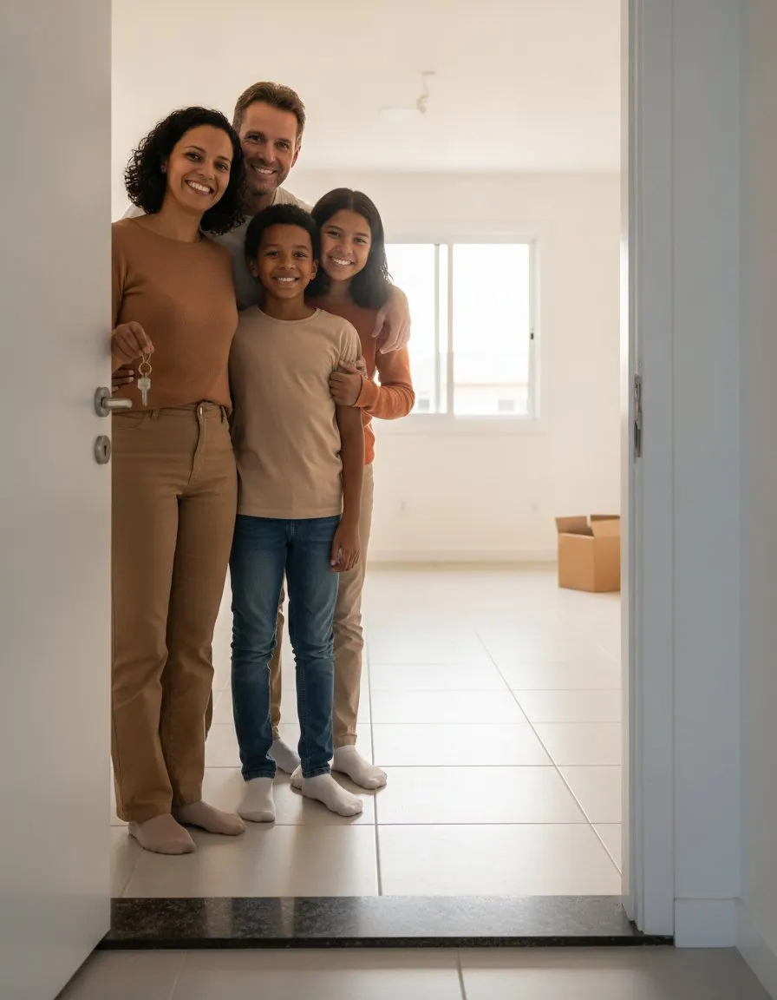
Imobiliárias
Caução, ITBI e aluguel parcelados
Texto sobre foto sempre com vinheta em gradiente Espresso #371B01. Nunca esverdeada ou de outra cor.
Direção
Faça
Luz natural lateral, tom dourado de fim de tarde.
Paleta bege, mel e creme com um acento mostarda na roupa ou no objeto.
Brasileiros reais e diversos: pele, idade, corpo e deficiência.
Interiores contemporâneos com madeira clara, linho e plantas.
object-fit: cover e ponto focal no rosto.
Alt curto e descritivo; foto decorativa com alt="".
Evite
Maquininha de cartão. O parcelamento é sempre pela web.
Dinheiro em espécie, símbolos de moeda, logos e texto legível.
Sorriso de banco de imagens, luz de estúdio, filtro frio.
Depoimento com foto de banco. Só pessoas reais e autorizadas.
Gradiente verde ou de outra cor sobre a foto.
Prompt-base para novas fotos
Editorial lifestyle photograph made in Brazil. Warm natural light from a side window, golden late-afternoon tone, soft long shadows. Warm beige, honey and cream palette with one ochre or mustard accent in clothing or objects. Contemporary Brazilian interior with light wood furniture, linen, ceramics and green plants, uncluttered and premium, never luxury. Real people with natural, relaxed expressions and authentic skin texture, diverse Brazilian faces. Shallow depth of field, 35mm lens, eye level, calm and trustworthy mood. No logos, no readable text, no card machines, no cash, no stock-photo smile. Photorealistic.
Scene: [pessoa + ação + ambiente]
Aspect ratio: [4:5 | 3:2 | 1:1]
Banco de imagens do portal
Fotos aprovadas e em uso no site, com o prompt que reproduz cada uma. Clique em "Ver prompt" para copiar.
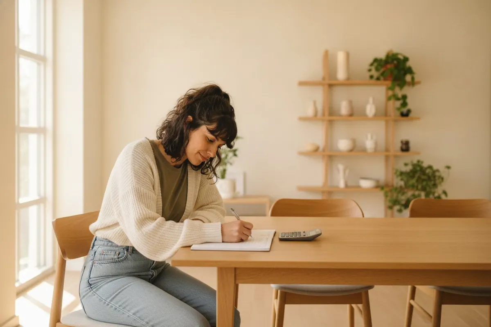
Organizando as contas
B2C
Hero Para você, Como funciona
Ver prompt
Editorial lifestyle photograph made in Brazil. Warm natural light from a side window, golden late-afternoon tone, soft long shadows. Warm beige, honey and cream palette with one ochre or mustard accent in clothing or objects. Contemporary Brazilian interior with light wood furniture, linen, ceramics and green plants, uncluttered and premium, never luxury. Real people with natural, relaxed expressions and authentic skin texture, diverse Brazilian faces. Shallow depth of field, 35mm lens, eye level, calm and trustworthy mood. No logos, no readable text, no card machines, no cash, no stock-photo smile. Photorealistic.
Scene: Young Brazilian woman with dark wavy hair and a cream sweater sitting at a light wood dining table, writing in a notebook next to her phone, bright minimal home with shelves and plants.
Aspect ratio: 3:2
fotos/b2c-01-celular-mesa.webp
Resolvido pelo celular
B2C
Card com foto, hero mobile
Ver prompt
Editorial lifestyle photograph made in Brazil. Warm natural light from a side window, golden late-afternoon tone, soft long shadows. Warm beige, honey and cream palette with one ochre or mustard accent in clothing or objects. Contemporary Brazilian interior with light wood furniture, linen, ceramics and green plants, uncluttered and premium, never luxury. Real people with natural, relaxed expressions and authentic skin texture, diverse Brazilian faces. Shallow depth of field, 35mm lens, eye level, calm and trustworthy mood. No logos, no readable text, no card machines, no cash, no stock-photo smile. Photorealistic.
Scene: Black Brazilian woman with natural curly hair, cream t-shirt and mustard wide-leg trousers, standing in a bright living room smiling at her smartphone.
Aspect ratio: 4:5
fotos/b2c-02-celular-em-pe.webp
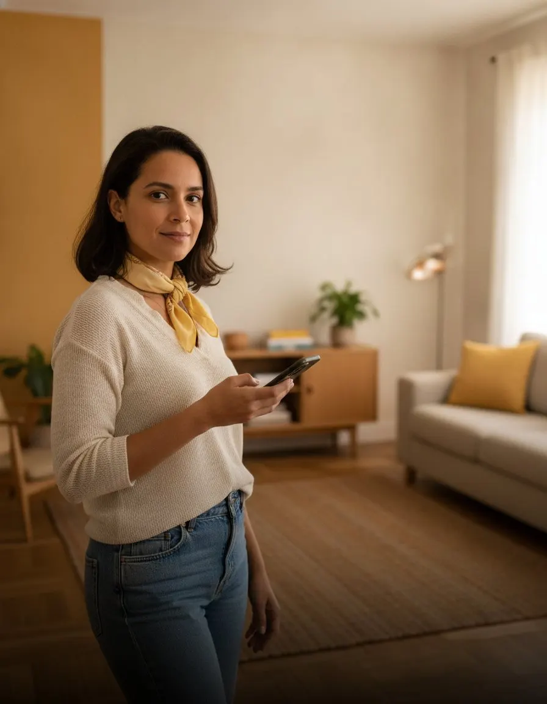
Conta paga em casa
B2C
LP Para você, depoimento
Ver prompt
Editorial lifestyle photograph made in Brazil. Warm natural light from a side window, golden late-afternoon tone, soft long shadows. Warm beige, honey and cream palette with one ochre or mustard accent in clothing or objects. Contemporary Brazilian interior with light wood furniture, linen, ceramics and green plants, uncluttered and premium, never luxury. Real people with natural, relaxed expressions and authentic skin texture, diverse Brazilian faces. Shallow depth of field, 35mm lens, eye level, calm and trustworthy mood. No logos, no readable text, no card machines, no cash, no stock-photo smile. Photorealistic.
Scene: Brazilian woman in her thirties with a mustard neck scarf and cream sweater, standing in a cozy living room holding her phone, gentle smile toward camera.
Aspect ratio: 4:5
fotos/b2c-03-celular-sala.webp
Pausa na rotina
B2C
Blog, educação financeira
Ver prompt
Editorial lifestyle photograph made in Brazil. Warm natural light from a side window, golden late-afternoon tone, soft long shadows. Warm beige, honey and cream palette with one ochre or mustard accent in clothing or objects. Contemporary Brazilian interior with light wood furniture, linen, ceramics and green plants, uncluttered and premium, never luxury. Real people with natural, relaxed expressions and authentic skin texture, diverse Brazilian faces. Shallow depth of field, 35mm lens, eye level, calm and trustworthy mood. No logos, no readable text, no card machines, no cash, no stock-photo smile. Photorealistic.
Scene: Young Brazilian woman with a mustard button shirt and jeans holding a tablet, standing by tall bright windows with plants, confident.
Aspect ratio: 3:2
fotos/b2c-04-janela-celular.webp
Parcelando no cartão
B2C
Checkout, simulador
Ver prompt
Editorial lifestyle photograph made in Brazil. Warm natural light from a side window, golden late-afternoon tone, soft long shadows. Warm beige, honey and cream palette with one ochre or mustard accent in clothing or objects. Contemporary Brazilian interior with light wood furniture, linen, ceramics and green plants, uncluttered and premium, never luxury. Real people with natural, relaxed expressions and authentic skin texture, diverse Brazilian faces. Shallow depth of field, 35mm lens, eye level, calm and trustworthy mood. No logos, no readable text, no card machines, no cash, no stock-photo smile. Photorealistic.
Scene: Smiling young woman with auburn curly hair and an olive overshirt holding a phone and a credit card at a wooden desk, warm bookshelf background.
Aspect ratio: 2:3
fotos/b2c-05-cartao-celular.webp
Tudo pelo computador
B2C
Como funciona, plataforma
Ver prompt
Editorial lifestyle photograph made in Brazil. Warm natural light from a side window, golden late-afternoon tone, soft long shadows. Warm beige, honey and cream palette with one ochre or mustard accent in clothing or objects. Contemporary Brazilian interior with light wood furniture, linen, ceramics and green plants, uncluttered and premium, never luxury. Real people with natural, relaxed expressions and authentic skin texture, diverse Brazilian faces. Shallow depth of field, 35mm lens, eye level, calm and trustworthy mood. No logos, no readable text, no card machines, no cash, no stock-photo smile. Photorealistic.
Scene: Brazilian woman with short curly hair and a white t-shirt smiling while using a silver laptop at a white desk, small succulent in the foreground.
Aspect ratio: 2:3
fotos/b2c-06-laptop-sorrindo.webp
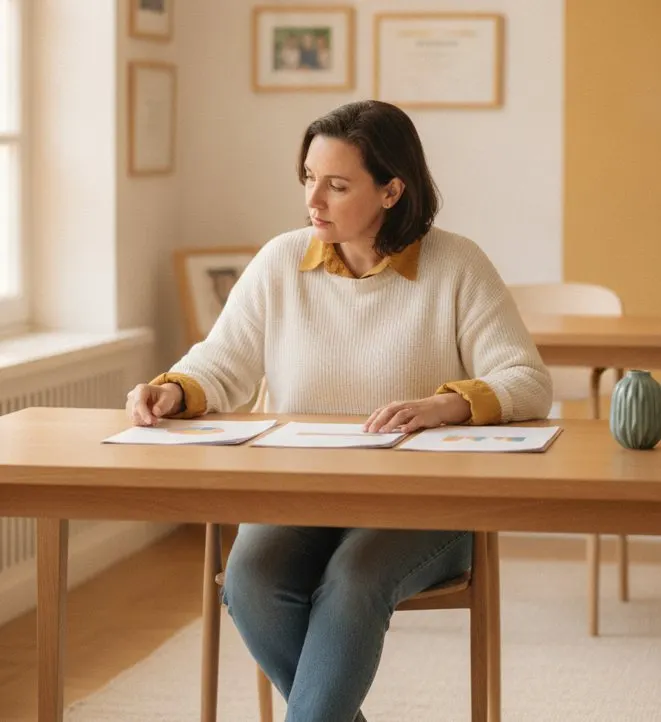
Planejando o mês
B2C
Comparativo, blog
Ver prompt
Editorial lifestyle photograph made in Brazil. Warm natural light from a side window, golden late-afternoon tone, soft long shadows. Warm beige, honey and cream palette with one ochre or mustard accent in clothing or objects. Contemporary Brazilian interior with light wood furniture, linen, ceramics and green plants, uncluttered and premium, never luxury. Real people with natural, relaxed expressions and authentic skin texture, diverse Brazilian faces. Shallow depth of field, 35mm lens, eye level, calm and trustworthy mood. No logos, no readable text, no card machines, no cash, no stock-photo smile. Photorealistic.
Scene: Brazilian woman in her forties with a cream sweater reviewing papers at a wooden table, framed pictures and a mustard wall behind.
Aspect ratio: 1:1
fotos/b2c-07-planejando-mesa.webp
Casa nova
Imobiliárias
LP Imobiliárias, hero
Ver prompt
Editorial lifestyle photograph made in Brazil. Warm natural light from a side window, golden late-afternoon tone, soft long shadows. Warm beige, honey and cream palette with one ochre or mustard accent in clothing or objects. Contemporary Brazilian interior with light wood furniture, linen, ceramics and green plants, uncluttered and premium, never luxury. Real people with natural, relaxed expressions and authentic skin texture, diverse Brazilian faces. Shallow depth of field, 35mm lens, eye level, calm and trustworthy mood. No logos, no readable text, no card machines, no cash, no stock-photo smile. Photorealistic.
Scene: Brazilian family of four standing at the open front door of a new bright apartment, moving boxes nearby, warm smiles.
Aspect ratio: 4:5
fotos/fam-01-casa-nova.webp
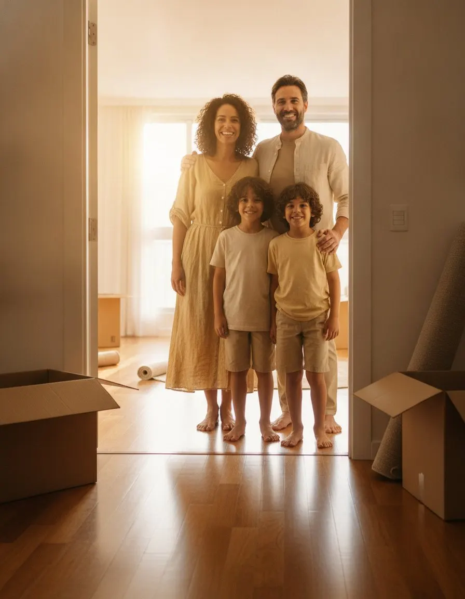
Família em casa
Educação e família
LP Educação, Sobre
Ver prompt
Editorial lifestyle photograph made in Brazil. Warm natural light from a side window, golden late-afternoon tone, soft long shadows. Warm beige, honey and cream palette with one ochre or mustard accent in clothing or objects. Contemporary Brazilian interior with light wood furniture, linen, ceramics and green plants, uncluttered and premium, never luxury. Real people with natural, relaxed expressions and authentic skin texture, diverse Brazilian faces. Shallow depth of field, 35mm lens, eye level, calm and trustworthy mood. No logos, no readable text, no card machines, no cash, no stock-photo smile. Photorealistic.
Scene: Brazilian family with two children standing in a sunlit living room with wooden floor and boxes, linen clothes, relaxed.
Aspect ratio: 4:5
fotos/fam-02-familia-sala.webp
Na estrada
Veículos
LP Veículo
Ver prompt
Editorial lifestyle photograph made in Brazil. Warm natural light from a side window, golden late-afternoon tone, soft long shadows. Warm beige, honey and cream palette with one ochre or mustard accent in clothing or objects. Contemporary Brazilian interior with light wood furniture, linen, ceramics and green plants, uncluttered and premium, never luxury. Real people with natural, relaxed expressions and authentic skin texture, diverse Brazilian faces. Shallow depth of field, 35mm lens, eye level, calm and trustworthy mood. No logos, no readable text, no card machines, no cash, no stock-photo smile. Photorealistic.
Scene: Brazilian woman with curly hair in the passenger seat of a car looking out the window at golden fields, phone in hand, serene.
Aspect ratio: 1:1
fotos/vei-01-motorista.webp
Empresário no escritório
B2B
Hub Para empresas
Ver prompt
Editorial lifestyle photograph made in Brazil. Warm natural light from a side window, golden late-afternoon tone, soft long shadows. Warm beige, honey and cream palette with one ochre or mustard accent in clothing or objects. Contemporary Brazilian interior with light wood furniture, linen, ceramics and green plants, uncluttered and premium, never luxury. Real people with natural, relaxed expressions and authentic skin texture, diverse Brazilian faces. Shallow depth of field, 35mm lens, eye level, calm and trustworthy mood. No logos, no readable text, no card machines, no cash, no stock-photo smile. Photorealistic.
Scene: Brazilian man in his thirties with an olive cardigan smiling at his laptop at a wooden desk, mustard tumbler on the table, bright office.
Aspect ratio: 1:1
fotos/b2b-01-laptop-cafe.webp
Vendas no tablet
B2B
Tecnologia, white label
Ver prompt
Editorial lifestyle photograph made in Brazil. Warm natural light from a side window, golden late-afternoon tone, soft long shadows. Warm beige, honey and cream palette with one ochre or mustard accent in clothing or objects. Contemporary Brazilian interior with light wood furniture, linen, ceramics and green plants, uncluttered and premium, never luxury. Real people with natural, relaxed expressions and authentic skin texture, diverse Brazilian faces. Shallow depth of field, 35mm lens, eye level, calm and trustworthy mood. No logos, no readable text, no card machines, no cash, no stock-photo smile. Photorealistic.
Scene: Brazilian man with glasses and a light linen jacket smiling at his phone while taking notes, warm backlight, workshop desk.
Aspect ratio: 3:2
fotos/b2b-03-tablet.webp
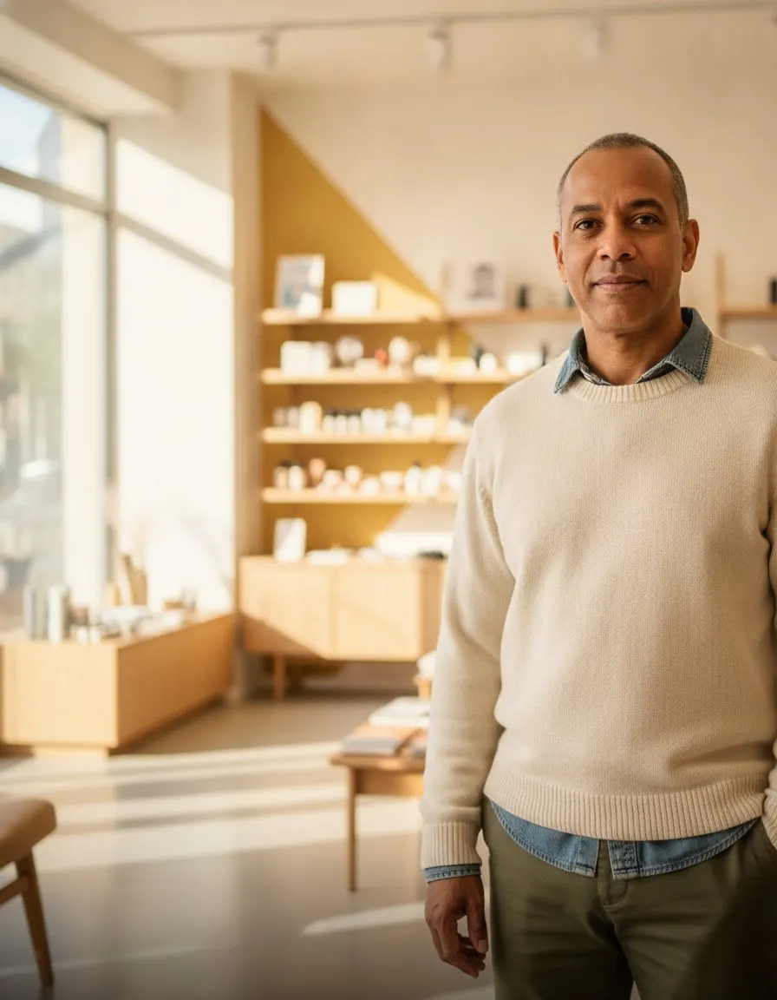
Comerciante na loja
B2B
Para empresas, parceiros
Ver prompt
Editorial lifestyle photograph made in Brazil. Warm natural light from a side window, golden late-afternoon tone, soft long shadows. Warm beige, honey and cream palette with one ochre or mustard accent in clothing or objects. Contemporary Brazilian interior with light wood furniture, linen, ceramics and green plants, uncluttered and premium, never luxury. Real people with natural, relaxed expressions and authentic skin texture, diverse Brazilian faces. Shallow depth of field, 35mm lens, eye level, calm and trustworthy mood. No logos, no readable text, no card machines, no cash, no stock-photo smile. Photorealistic.
Scene: Brazilian shop owner in his fifties with a cream sweater standing in his small, tidy store with wooden shelves and a mustard wall.
Aspect ratio: 4:5
fotos/b2b-05-comerciante-loja.webp
Gestor confiante
B2B
Sobre, autoridade
Ver prompt
Editorial lifestyle photograph made in Brazil. Warm natural light from a side window, golden late-afternoon tone, soft long shadows. Warm beige, honey and cream palette with one ochre or mustard accent in clothing or objects. Contemporary Brazilian interior with light wood furniture, linen, ceramics and green plants, uncluttered and premium, never luxury. Real people with natural, relaxed expressions and authentic skin texture, diverse Brazilian faces. Shallow depth of field, 35mm lens, eye level, calm and trustworthy mood. No logos, no readable text, no card machines, no cash, no stock-photo smile. Photorealistic.
Scene: Brazilian businessman in his fifties with gray beard and white shirt standing in a bright office holding a clipboard, framed certificate behind.
Aspect ratio: 4:5
fotos/b2b-06-empresario.webp
Contadores em reunião
Contabilidades
LP Contabilidades
Ver prompt
Editorial lifestyle photograph made in Brazil. Warm natural light from a side window, golden late-afternoon tone, soft long shadows. Warm beige, honey and cream palette with one ochre or mustard accent in clothing or objects. Contemporary Brazilian interior with light wood furniture, linen, ceramics and green plants, uncluttered and premium, never luxury. Real people with natural, relaxed expressions and authentic skin texture, diverse Brazilian faces. Shallow depth of field, 35mm lens, eye level, calm and trustworthy mood. No logos, no readable text, no card machines, no cash, no stock-photo smile. Photorealistic.
Scene: Two Brazilian accountants, a woman in a mustard blazer and a man in an olive shirt, reviewing documents and a tablet at a long light wood table.
Aspect ratio: 4:5
fotos/con-01-dupla-documentos.webp
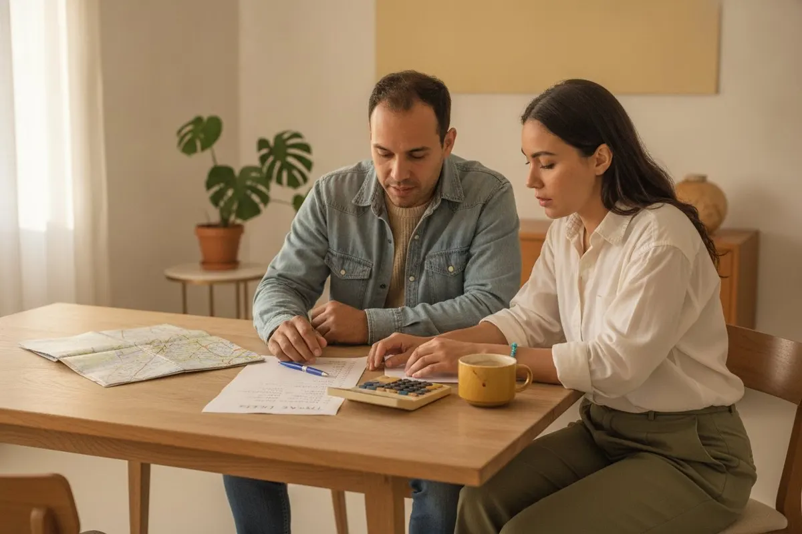
Contador orienta o cliente
Contabilidades
LP Contabilidades, parcerias
Ver prompt
Editorial lifestyle photograph made in Brazil. Warm natural light from a side window, golden late-afternoon tone, soft long shadows. Warm beige, honey and cream palette with one ochre or mustard accent in clothing or objects. Contemporary Brazilian interior with light wood furniture, linen, ceramics and green plants, uncluttered and premium, never luxury. Real people with natural, relaxed expressions and authentic skin texture, diverse Brazilian faces. Shallow depth of field, 35mm lens, eye level, calm and trustworthy mood. No logos, no readable text, no card machines, no cash, no stock-photo smile. Photorealistic.
Scene: Brazilian man in a denim shirt and a woman in a cream blouse going through papers and a calculator at a wooden table with plants.
Aspect ratio: 3:2
fotos/con-02-reuniao-mesa.webp
Revisando a guia
Contabilidades
Tributos, Contabilidades
Ver prompt
Editorial lifestyle photograph made in Brazil. Warm natural light from a side window, golden late-afternoon tone, soft long shadows. Warm beige, honey and cream palette with one ochre or mustard accent in clothing or objects. Contemporary Brazilian interior with light wood furniture, linen, ceramics and green plants, uncluttered and premium, never luxury. Real people with natural, relaxed expressions and authentic skin texture, diverse Brazilian faces. Shallow depth of field, 35mm lens, eye level, calm and trustworthy mood. No logos, no readable text, no card machines, no cash, no stock-photo smile. Photorealistic.
Scene: Black Brazilian man in his sixties with a gray polo reviewing printed papers at a white desk, mustard file box beside him.
Aspect ratio: 1:1
fotos/con-03-revisando-papeis.webp
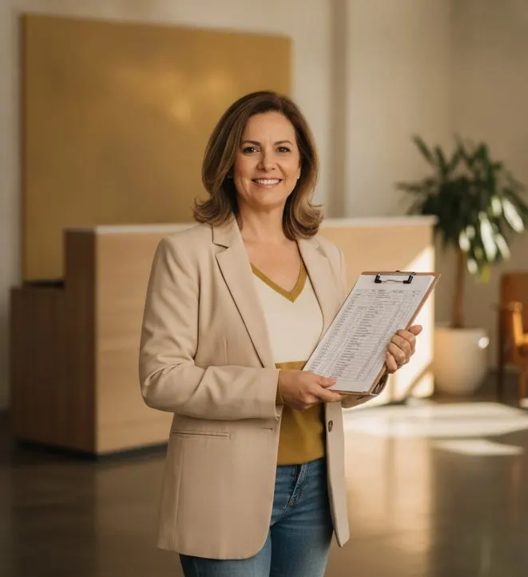
Escritório jurídico
Setor jurídico
LP Setor jurídico
Ver prompt
Editorial lifestyle photograph made in Brazil. Warm natural light from a side window, golden late-afternoon tone, soft long shadows. Warm beige, honey and cream palette with one ochre or mustard accent in clothing or objects. Contemporary Brazilian interior with light wood furniture, linen, ceramics and green plants, uncluttered and premium, never luxury. Real people with natural, relaxed expressions and authentic skin texture, diverse Brazilian faces. Shallow depth of field, 35mm lens, eye level, calm and trustworthy mood. No logos, no readable text, no card machines, no cash, no stock-photo smile. Photorealistic.
Scene: Brazilian lawyer in her forties with a cream blazer smiling and holding a clipboard in a warm office with a mustard wall and plants.
Aspect ratio: 1:1
fotos/jur-01-advogada.webp
Atendimento próximo
Parcerias
Contato, Central de ajuda
Ver prompt
Editorial lifestyle photograph made in Brazil. Warm natural light from a side window, golden late-afternoon tone, soft long shadows. Warm beige, honey and cream palette with one ochre or mustard accent in clothing or objects. Contemporary Brazilian interior with light wood furniture, linen, ceramics and green plants, uncluttered and premium, never luxury. Real people with natural, relaxed expressions and authentic skin texture, diverse Brazilian faces. Shallow depth of field, 35mm lens, eye level, calm and trustworthy mood. No logos, no readable text, no card machines, no cash, no stock-photo smile. Photorealistic.
Scene: Brazilian man and woman colleagues reviewing a tablet together in a bright office with plants, friendly.
Aspect ratio: 4:5
fotos/par-01-atendimento.webp
Equipe parceira
Parcerias
Seja parceiro
Ver prompt
Editorial lifestyle photograph made in Brazil. Warm natural light from a side window, golden late-afternoon tone, soft long shadows. Warm beige, honey and cream palette with one ochre or mustard accent in clothing or objects. Contemporary Brazilian interior with light wood furniture, linen, ceramics and green plants, uncluttered and premium, never luxury. Real people with natural, relaxed expressions and authentic skin texture, diverse Brazilian faces. Shallow depth of field, 35mm lens, eye level, calm and trustworthy mood. No logos, no readable text, no card machines, no cash, no stock-photo smile. Photorealistic.
Scene: Brazilian team of four women around a wooden table with a tablet, a standing leader in a linen shirt, posters on the wall.
Aspect ratio: 1:1
fotos/par-02-reuniao-equipe.webp
Treinamento de parceiros
Parcerias
Parcerias, Tecnologia
Ver prompt
Editorial lifestyle photograph made in Brazil. Warm natural light from a side window, golden late-afternoon tone, soft long shadows. Warm beige, honey and cream palette with one ochre or mustard accent in clothing or objects. Contemporary Brazilian interior with light wood furniture, linen, ceramics and green plants, uncluttered and premium, never luxury. Real people with natural, relaxed expressions and authentic skin texture, diverse Brazilian faces. Shallow depth of field, 35mm lens, eye level, calm and trustworthy mood. No logos, no readable text, no card machines, no cash, no stock-photo smile. Photorealistic.
Scene: Diverse Brazilian team in a bright meeting room around a long wooden table with laptops, a screen with charts, mustard wall.
Aspect ratio: 3:4
fotos/par-03-reuniao-grande.webp
Acordo no balcão
Parcerias
Indique e ganhe, Parcerias
Ver prompt
Editorial lifestyle photograph made in Brazil. Warm natural light from a side window, golden late-afternoon tone, soft long shadows. Warm beige, honey and cream palette with one ochre or mustard accent in clothing or objects. Contemporary Brazilian interior with light wood furniture, linen, ceramics and green plants, uncluttered and premium, never luxury. Real people with natural, relaxed expressions and authentic skin texture, diverse Brazilian faces. Shallow depth of field, 35mm lens, eye level, calm and trustworthy mood. No logos, no readable text, no card machines, no cash, no stock-photo smile. Photorealistic.
Scene: Black Brazilian man and a woman shaking hands across a light wood reception counter, arched mustard wall and plants.
Aspect ratio: 4:5
fotos/par-04-balcao.webp
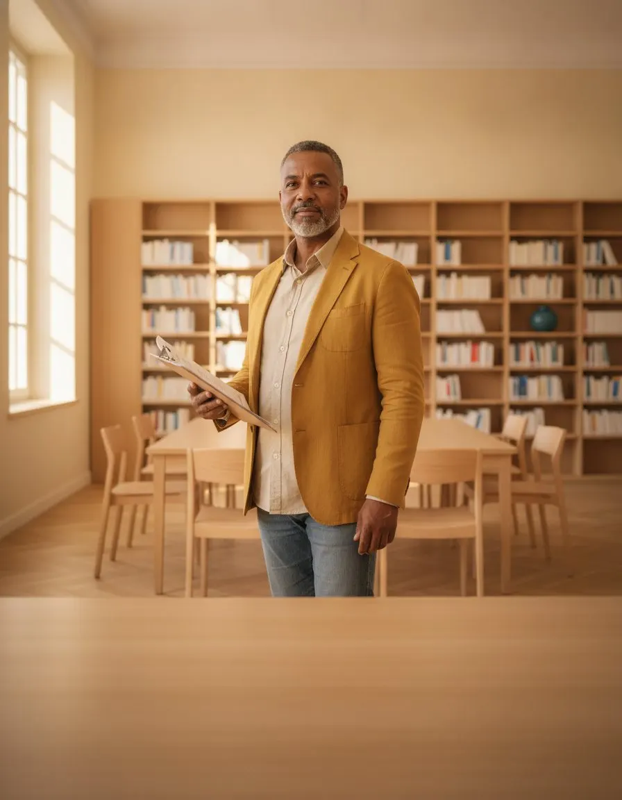
Escola
Educação
LP Educação
Ver prompt
Editorial lifestyle photograph made in Brazil. Warm natural light from a side window, golden late-afternoon tone, soft long shadows. Warm beige, honey and cream palette with one ochre or mustard accent in clothing or objects. Contemporary Brazilian interior with light wood furniture, linen, ceramics and green plants, uncluttered and premium, never luxury. Real people with natural, relaxed expressions and authentic skin texture, diverse Brazilian faces. Shallow depth of field, 35mm lens, eye level, calm and trustworthy mood. No logos, no readable text, no card machines, no cash, no stock-photo smile. Photorealistic.
Scene: Brazilian school director in his fifties with a mustard blazer standing in a bright library with wooden shelves and chairs.
Aspect ratio: 4:5
fotos/edu-01-biblioteca.webp
Planejamento
Still
Blog, estados vazios
Ver prompt
Editorial lifestyle photograph made in Brazil. Warm natural light from a side window, golden late-afternoon tone, soft long shadows. Warm beige, honey and cream palette with one ochre or mustard accent in clothing or objects. Contemporary Brazilian interior with light wood furniture, linen, ceramics and green plants, uncluttered and premium, never luxury. Real people with natural, relaxed expressions and authentic skin texture, diverse Brazilian faces. Shallow depth of field, 35mm lens, eye level, calm and trustworthy mood. No logos, no readable text, no card machines, no cash, no stock-photo smile. Photorealistic.
Scene: Still life of an open spiral notebook with a pen and a mustard ceramic mug on a light wood table, soft window light, no people.
Aspect ratio: 4:5
fotos/obj-01-caderno-caneca.webp
Imagem
Ilustrações
Risografia em duas tintas, espresso e dourado, para compor com a fotografia. A foto prova que é real; a ilustração conta o que acontece.
Textura
Grão de risografia
Pontilhado dentro de cada cor, tintas levemente desencontradas, borda de recorte irregular e pincel seco.
Tinta
Duas tintas sobre papel
Espresso e dourado. Onde as duas se sobrepõem nasce um marrom mais escuro. O papel é a terceira cor.
Corpo
Proporção autoral
Braços longos, mãos grandes e expressivas, cabeça pequena. Nem realista nem infantil.
Tema
Educação financeira e liberdade
Boletos voando, o check ao fundo, contas organizadas no celular ou no computador.
Formato
1980 × 1020 e 1200 × 1200
Cena larga para dobras e heros; quadrado com respiro para máscaras, cards e hero mobile. Entrega em PNG ou WebP; nunca vetorizar, o grão só existe em bitmap.
Evitar
O que fica de fora
Maquininha, texto e números na imagem, símbolos de moeda, logos, pânico e caricatura.
Tintas
Espresso · #371B01
Gold 500 · #FFB800
Papel · #F6EEDE
Elenco fixo
Catorze brasileiros (o guia de ilustrações ainda diz 13; o 14º é o Thiago, do suporte) atravessam todas as jornadas. Pele, idade, corpo e deficiência variados, sempre com dignidade e sem fazer da diferença o assunto da cena.
B2C
Ana, 28
Parda, cachos em coque alto, suéter amplo.
B2C · família
Rafael, 34
Negro, cabelo curto, barba aparada, camisa de manga dobrada.
B2C · indicação
Júlia, 22
Branca, sardas, cabelo liso na altura do ombro, tricô.
B2C · estudante
Lucas, 19
Moreno, cabelo ondulado, moletom e mochila.
B2C
Camila, 26
Negra, tranças presas, prótese de corrida abaixo do joelho.
Artistic editorial illustration with a handmade risograph print look, like a contemporary independent magazine illustration. Visible grain and stippled texture inside every color shape, slightly misregistered color layers, imperfect hand-cut shape edges, a few loose dry-brush strokes, no gradients, no clean vector look, no stock illustration look. Limited two-ink riso palette on warm off-white paper: deep espresso brown #371B01 and golden yellow #FFB800, plus the paper color showing through; overlaps of the two inks create a darker brown; skin tones made with lighter or denser espresso halftone so different skin colors read clearly. Slightly exaggerated proportions: long arms, big expressive hands, small head. Lots of empty paper space. No text, no letters, no numbers, no logos.
Character: [descrição do elenco]
Scene: [ação + objeto simbólico + enquadramento]
Produção. Gerado no Figma com o modelo GPT Image em 1536 × 1024 e entregue em 1980 × 1020. Mantenha o bloco igual e troque só personagem e cena. Revise mãos e braços em toda geração. Créditos do Weave só com aprovação.
Biblioteca
Duas versões de cada cena: 1980 × 1020 para dobras e heros de largura total, e 1200 × 1200 com respiro, para máscaras quadradas, cards e o hero mobile. Use o seletor de formato para alternar. Os arquivos daqui são WebP otimizados para a web (1100 e 700 px); os PNGs em tamanho cheio ficam na pasta "Sistema de Ilustrações Parcele Aqui (risografia v2)" do Drive do POTUX-014.
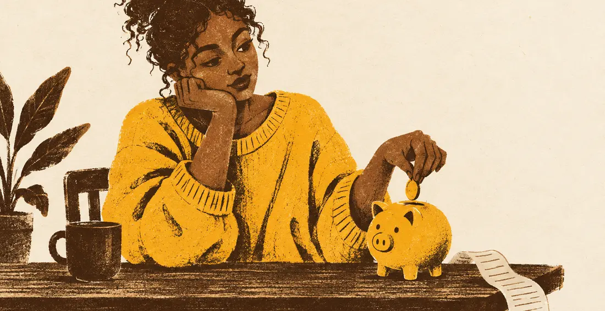
Moeda no cofrinho
B2C
Ana · Abertura do problema, educação financeira
Ver prompt
Artistic editorial illustration with a handmade risograph print look, like a contemporary independent magazine illustration. Visible grain and stippled texture inside every color shape, slightly misregistered color layers, imperfect hand-cut shape edges, a few loose dry-brush strokes, no gradients, no clean vector look, no stock illustration look. Limited two-ink riso palette on warm off-white paper: deep espresso brown #371B01 and golden yellow #FFB800, plus the paper color showing through; overlaps of the two inks create a darker brown; skin tones made with lighter or denser espresso halftone so different skin colors read clearly. Slightly exaggerated proportions: long arms, big expressive hands, small head. Lots of empty paper space. No text, no letters, no numbers, no logos.
Character: Ana, 28, Brazilian brown-skinned woman, curly hair in a high bun, oversized sweater.
Scene: dropping a coin into a piggy bank at a simple table, calm and hopeful.
ilustracoes/b2c-01-cofrinho.webp
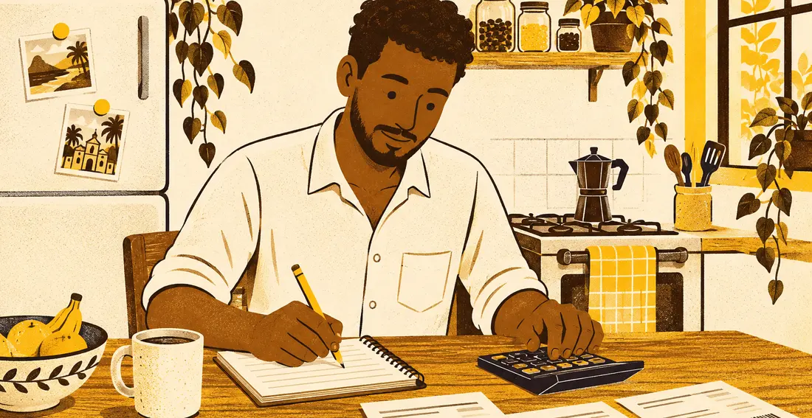
Fazendo as contas
B2C
Rafael · Contas da casa, simulador
Ver prompt
Artistic editorial illustration with a handmade risograph print look, like a contemporary independent magazine illustration. Visible grain and stippled texture inside every color shape, slightly misregistered color layers, imperfect hand-cut shape edges, a few loose dry-brush strokes, no gradients, no clean vector look, no stock illustration look. Limited two-ink riso palette on warm off-white paper: deep espresso brown #371B01 and golden yellow #FFB800, plus the paper color showing through; overlaps of the two inks create a darker brown; skin tones made with lighter or denser espresso halftone so different skin colors read clearly. Slightly exaggerated proportions: long arms, big expressive hands, small head. Lots of empty paper space. No text, no letters, no numbers, no logos.
Character: Rafael, 34, Black Brazilian man, short hair, trimmed beard, shirt with rolled sleeves.
Scene: doing the household math with a calculator and a few bills on the table.
ilustracoes/b2c-02-contas-calculadora.webp
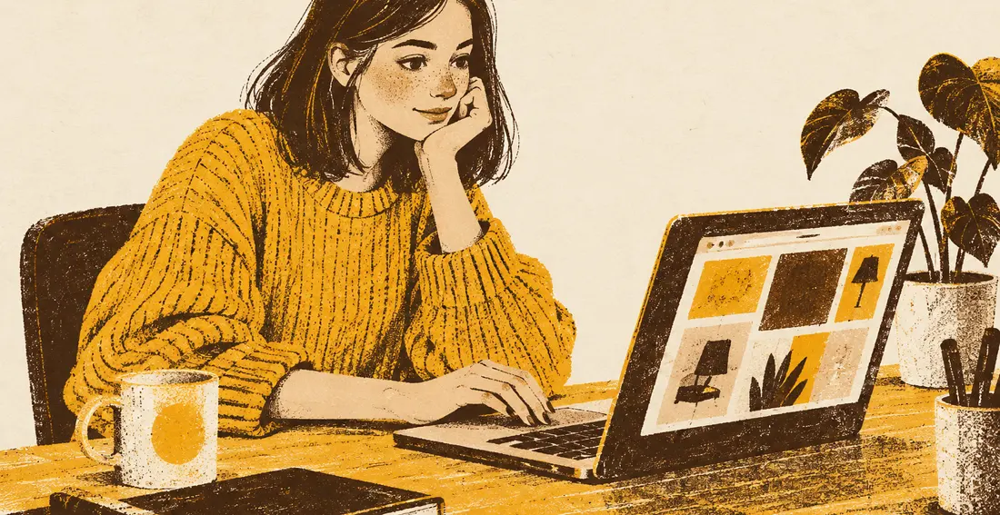
Pesquisando no computador
B2C
Júlia · Como funciona, passo 1
Ver prompt
Artistic editorial illustration with a handmade risograph print look, like a contemporary independent magazine illustration. Visible grain and stippled texture inside every color shape, slightly misregistered color layers, imperfect hand-cut shape edges, a few loose dry-brush strokes, no gradients, no clean vector look, no stock illustration look. Limited two-ink riso palette on warm off-white paper: deep espresso brown #371B01 and golden yellow #FFB800, plus the paper color showing through; overlaps of the two inks create a darker brown; skin tones made with lighter or denser espresso halftone so different skin colors read clearly. Slightly exaggerated proportions: long arms, big expressive hands, small head. Lots of empty paper space. No text, no letters, no numbers, no logos.
Character: Júlia, 22, white Brazilian woman with freckles, straight shoulder-length hair, knit sweater.
Scene: browsing on a laptop at home, relaxed, curious expression.
ilustracoes/b2c-03-navegando-pc.webp
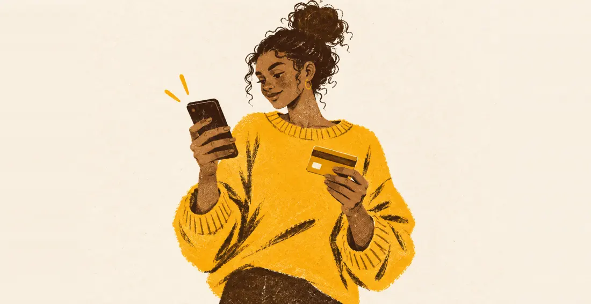
Parcelando no cartão
B2C
Ana · Hero B2C, passo de pagamento
Ver prompt
Artistic editorial illustration with a handmade risograph print look, like a contemporary independent magazine illustration. Visible grain and stippled texture inside every color shape, slightly misregistered color layers, imperfect hand-cut shape edges, a few loose dry-brush strokes, no gradients, no clean vector look, no stock illustration look. Limited two-ink riso palette on warm off-white paper: deep espresso brown #371B01 and golden yellow #FFB800, plus the paper color showing through; overlaps of the two inks create a darker brown; skin tones made with lighter or denser espresso halftone so different skin colors read clearly. Slightly exaggerated proportions: long arms, big expressive hands, small head. Lots of empty paper space. No text, no letters, no numbers, no logos.
Character: Ana, 28, Brazilian brown-skinned woman, curly hair in a high bun, oversized sweater.
Scene: paying a bill online on her smartphone with a credit card in the other hand, relieved.
ilustracoes/b2c-04-parcelando-celular.webp
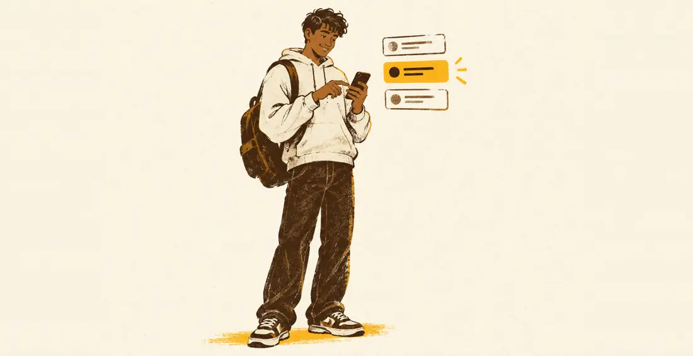
Escolhendo as parcelas
B2C
Lucas · Simulador, passo 2
Ver prompt
Artistic editorial illustration with a handmade risograph print look, like a contemporary independent magazine illustration. Visible grain and stippled texture inside every color shape, slightly misregistered color layers, imperfect hand-cut shape edges, a few loose dry-brush strokes, no gradients, no clean vector look, no stock illustration look. Limited two-ink riso palette on warm off-white paper: deep espresso brown #371B01 and golden yellow #FFB800, plus the paper color showing through; overlaps of the two inks create a darker brown; skin tones made with lighter or denser espresso halftone so different skin colors read clearly. Slightly exaggerated proportions: long arms, big expressive hands, small head. Lots of empty paper space. No text, no letters, no numbers, no logos.
Character: Lucas, 19, tan Brazilian young man, wavy hair, hoodie and backpack.
Scene: choosing installments on a smartphone, thoughtful, small check mark floating nearby.
ilustracoes/b2c-05-escolhendo-parcelas.webp
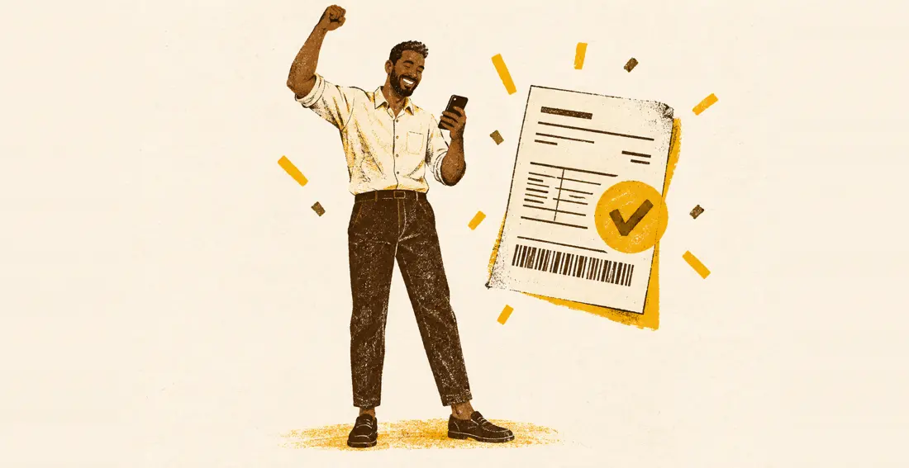
Conta paga
B2C
Rafael · Tela de sucesso, depoimento
Ver prompt
Artistic editorial illustration with a handmade risograph print look, like a contemporary independent magazine illustration. Visible grain and stippled texture inside every color shape, slightly misregistered color layers, imperfect hand-cut shape edges, a few loose dry-brush strokes, no gradients, no clean vector look, no stock illustration look. Limited two-ink riso palette on warm off-white paper: deep espresso brown #371B01 and golden yellow #FFB800, plus the paper color showing through; overlaps of the two inks create a darker brown; skin tones made with lighter or denser espresso halftone so different skin colors read clearly. Slightly exaggerated proportions: long arms, big expressive hands, small head. Lots of empty paper space. No text, no letters, no numbers, no logos.
Character: Rafael, 34, Black Brazilian man, short hair, trimmed beard, shirt with rolled sleeves.
Scene: celebrating with arms raised after paying a bill online, a large check mark behind him.
ilustracoes/b2c-06-pagou-comemora.webp
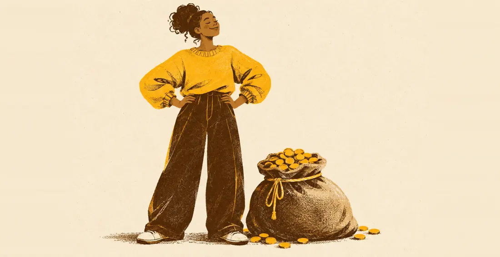
Fôlego de caixa
B2C
Ana · Vantagens, fechamento
Ver prompt
Artistic editorial illustration with a handmade risograph print look, like a contemporary independent magazine illustration. Visible grain and stippled texture inside every color shape, slightly misregistered color layers, imperfect hand-cut shape edges, a few loose dry-brush strokes, no gradients, no clean vector look, no stock illustration look. Limited two-ink riso palette on warm off-white paper: deep espresso brown #371B01 and golden yellow #FFB800, plus the paper color showing through; overlaps of the two inks create a darker brown; skin tones made with lighter or denser espresso halftone so different skin colors read clearly. Slightly exaggerated proportions: long arms, big expressive hands, small head. Lots of empty paper space. No text, no letters, no numbers, no logos.
Character: Ana, 28, Brazilian brown-skinned woman, curly hair in a high bun, oversized sweater.
Scene: breathing out with relief, eyes closed, paper bills floating away upward.
ilustracoes/b2c-07-folego-de-caixa.webp
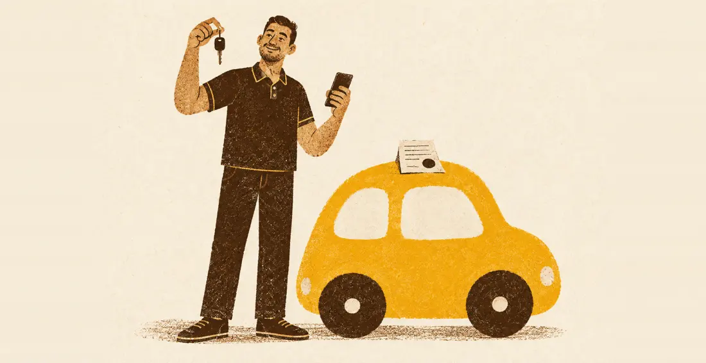
IPVA em dia
B2C
Thiago · LP Veículo
Ver prompt
Artistic editorial illustration with a handmade risograph print look, like a contemporary independent magazine illustration. Visible grain and stippled texture inside every color shape, slightly misregistered color layers, imperfect hand-cut shape edges, a few loose dry-brush strokes, no gradients, no clean vector look, no stock illustration look. Limited two-ink riso palette on warm off-white paper: deep espresso brown #371B01 and golden yellow #FFB800, plus the paper color showing through; overlaps of the two inks create a darker brown; skin tones made with lighter or denser espresso halftone so different skin colors read clearly. Slightly exaggerated proportions: long arms, big expressive hands, small head. Lots of empty paper space. No text, no letters, no numbers, no logos.
Character: Thiago, 38, light brown-skinned Brazilian man, stubble, button-up or polo shirt.
Scene: leaning on his car holding a smartphone with a check mark, vehicle tax paid online.
ilustracoes/b2c-08-ipva-veiculo.webp
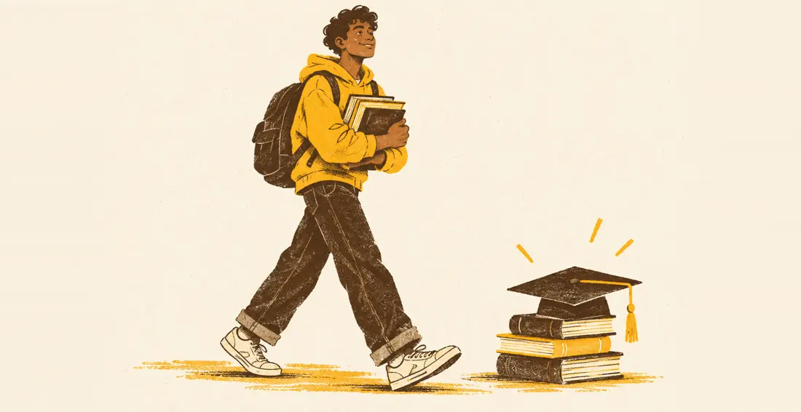
Mensalidade em dia
B2C
Lucas · LP Educação
Ver prompt
Artistic editorial illustration with a handmade risograph print look, like a contemporary independent magazine illustration. Visible grain and stippled texture inside every color shape, slightly misregistered color layers, imperfect hand-cut shape edges, a few loose dry-brush strokes, no gradients, no clean vector look, no stock illustration look. Limited two-ink riso palette on warm off-white paper: deep espresso brown #371B01 and golden yellow #FFB800, plus the paper color showing through; overlaps of the two inks create a darker brown; skin tones made with lighter or denser espresso halftone so different skin colors read clearly. Slightly exaggerated proportions: long arms, big expressive hands, small head. Lots of empty paper space. No text, no letters, no numbers, no logos.
Character: Lucas, 19, tan Brazilian young man, wavy hair, hoodie and backpack.
Scene: student with backpack and books, tuition paid, confident smile.
ilustracoes/b2c-09-mensalidade-estudante.webp
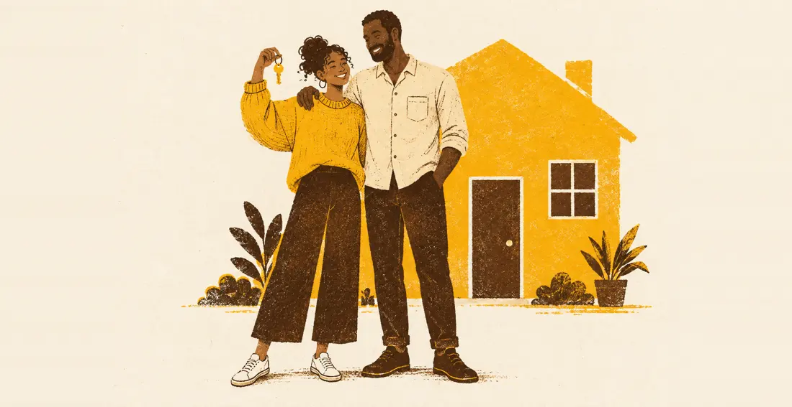
Entrada do imóvel
B2C
Ana e Rafael · LP Imobiliárias
Ver prompt
Artistic editorial illustration with a handmade risograph print look, like a contemporary independent magazine illustration. Visible grain and stippled texture inside every color shape, slightly misregistered color layers, imperfect hand-cut shape edges, a few loose dry-brush strokes, no gradients, no clean vector look, no stock illustration look. Limited two-ink riso palette on warm off-white paper: deep espresso brown #371B01 and golden yellow #FFB800, plus the paper color showing through; overlaps of the two inks create a darker brown; skin tones made with lighter or denser espresso halftone so different skin colors read clearly. Slightly exaggerated proportions: long arms, big expressive hands, small head. Lots of empty paper space. No text, no letters, no numbers, no logos.
Character: Ana, 28, Brazilian brown-skinned woman, curly hair in a high bun, oversized sweater; Rafael, 34, Black Brazilian man, short hair, trimmed beard, shirt with rolled sleeves.
Scene: couple holding new apartment keys in front of a door, happy.
ilustracoes/b2c-10-entrada-imovel.webp
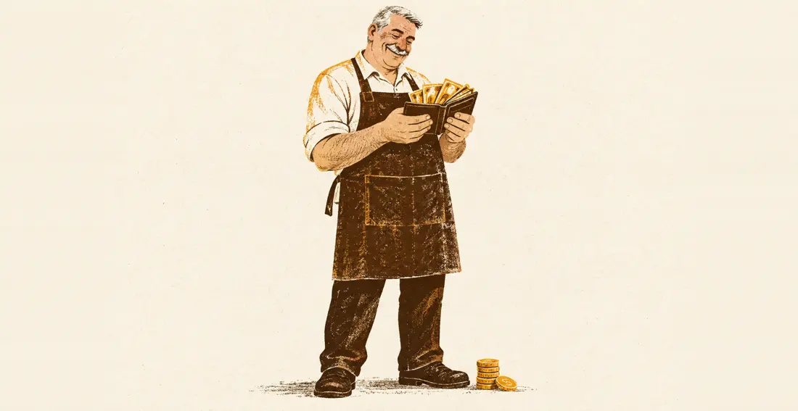
Recebeu à vista
B2B
Seu Antônio · Hub B2B, proposta de valor
Ver prompt
Artistic editorial illustration with a handmade risograph print look, like a contemporary independent magazine illustration. Visible grain and stippled texture inside every color shape, slightly misregistered color layers, imperfect hand-cut shape edges, a few loose dry-brush strokes, no gradients, no clean vector look, no stock illustration look. Limited two-ink riso palette on warm off-white paper: deep espresso brown #371B01 and golden yellow #FFB800, plus the paper color showing through; overlaps of the two inks create a darker brown; skin tones made with lighter or denser espresso halftone so different skin colors read clearly. Slightly exaggerated proportions: long arms, big expressive hands, small head. Lots of empty paper space. No text, no letters, no numbers, no logos.
Character: Seu Antônio, 55, white Brazilian man, graying hair, mustache, work apron.
Scene: in his auto repair shop looking at a tablet showing a payment received, satisfied.
ilustracoes/b2b-01-recebeu-a-vista.webp
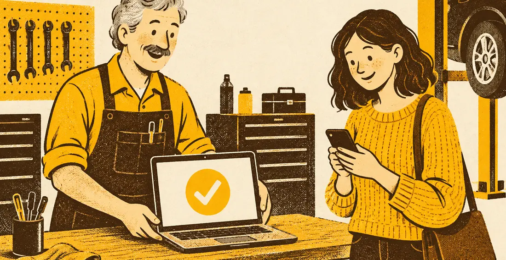
Pagamento online no balcão
B2B
Seu Antônio e Júlia · LP Veículo, varejo
Ver prompt
Artistic editorial illustration with a handmade risograph print look, like a contemporary independent magazine illustration. Visible grain and stippled texture inside every color shape, slightly misregistered color layers, imperfect hand-cut shape edges, a few loose dry-brush strokes, no gradients, no clean vector look, no stock illustration look. Limited two-ink riso palette on warm off-white paper: deep espresso brown #371B01 and golden yellow #FFB800, plus the paper color showing through; overlaps of the two inks create a darker brown; skin tones made with lighter or denser espresso halftone so different skin colors read clearly. Slightly exaggerated proportions: long arms, big expressive hands, small head. Lots of empty paper space. No text, no letters, no numbers, no logos.
Character: Seu Antônio, 55, white Brazilian man, graying hair, mustache, work apron; Júlia, 22, white Brazilian woman with freckles, straight shoulder-length hair, knit sweater.
Scene: at the shop counter, the customer pays online on her phone while he smiles.
ilustracoes/b2b-02-atendimento-balcao.webp
Painel do parceiro
B2B
Marina · Tecnologia, white label
Ver prompt
Artistic editorial illustration with a handmade risograph print look, like a contemporary independent magazine illustration. Visible grain and stippled texture inside every color shape, slightly misregistered color layers, imperfect hand-cut shape edges, a few loose dry-brush strokes, no gradients, no clean vector look, no stock illustration look. Limited two-ink riso palette on warm off-white paper: deep espresso brown #371B01 and golden yellow #FFB800, plus the paper color showing through; overlaps of the two inks create a darker brown; skin tones made with lighter or denser espresso halftone so different skin colors read clearly. Slightly exaggerated proportions: long arms, big expressive hands, small head. Lots of empty paper space. No text, no letters, no numbers, no logos.
Character: Marina, 36, Japanese-Brazilian woman, black bob haircut, structured blazer.
Scene: checking a simple dashboard on a desktop computer, focused.
ilustracoes/b2b-03-painel-pc.webp
Negócio fechado
B2B
Marina e Thiago · CTA B2B, proposta
Ver prompt
Artistic editorial illustration with a handmade risograph print look, like a contemporary independent magazine illustration. Visible grain and stippled texture inside every color shape, slightly misregistered color layers, imperfect hand-cut shape edges, a few loose dry-brush strokes, no gradients, no clean vector look, no stock illustration look. Limited two-ink riso palette on warm off-white paper: deep espresso brown #371B01 and golden yellow #FFB800, plus the paper color showing through; overlaps of the two inks create a darker brown; skin tones made with lighter or denser espresso halftone so different skin colors read clearly. Slightly exaggerated proportions: long arms, big expressive hands, small head. Lots of empty paper space. No text, no letters, no numbers, no logos.
Character: Marina, 36, Japanese-Brazilian woman, black bob haircut, structured blazer; Thiago, 38, light brown-skinned Brazilian man, stubble, button-up or polo shirt.
Scene: handshake in modern casual attire, polo and button-up shirt, a check mark in the background.
ilustracoes/b2b-04-aperto-de-mao.webp
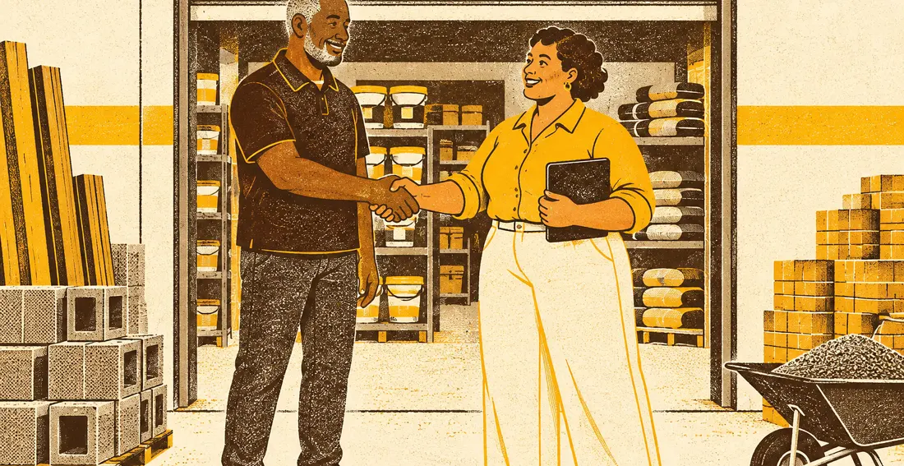
Parceria na loja
B2B
Jorge e Patrícia · Hub B2B, parceiros
Ver prompt
Artistic editorial illustration with a handmade risograph print look, like a contemporary independent magazine illustration. Visible grain and stippled texture inside every color shape, slightly misregistered color layers, imperfect hand-cut shape edges, a few loose dry-brush strokes, no gradients, no clean vector look, no stock illustration look. Limited two-ink riso palette on warm off-white paper: deep espresso brown #371B01 and golden yellow #FFB800, plus the paper color showing through; overlaps of the two inks create a darker brown; skin tones made with lighter or denser espresso halftone so different skin colors read clearly. Slightly exaggerated proportions: long arms, big expressive hands, small head. Lots of empty paper space. No text, no letters, no numbers, no logos.
Character: Patrícia, 40, plus-size tan Brazilian woman, short curls, wrap dress.
Scene: handshake inside a building materials store, shelves behind.
ilustracoes/b2b-09-aperto-loja-materiais.webp
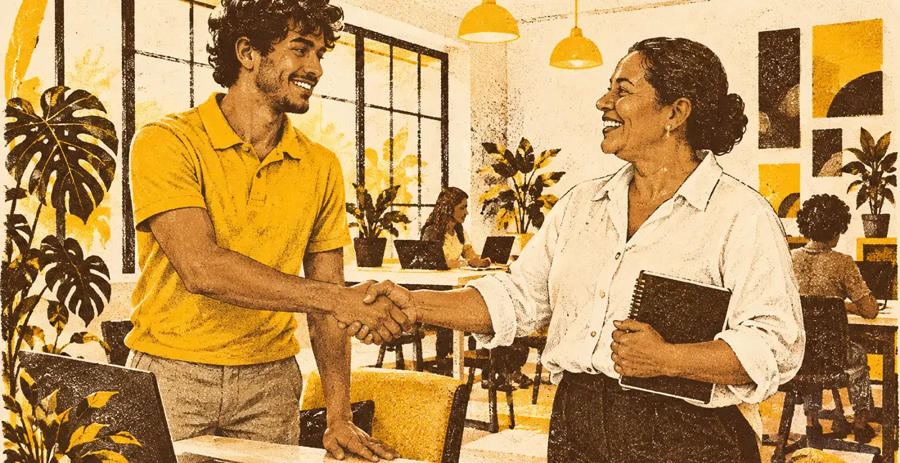
Acordo no coworking
B2B
Lucas e Dona Rosa · Empreendedores, Hub B2B
Ver prompt
Artistic editorial illustration with a handmade risograph print look, like a contemporary independent magazine illustration. Visible grain and stippled texture inside every color shape, slightly misregistered color layers, imperfect hand-cut shape edges, a few loose dry-brush strokes, no gradients, no clean vector look, no stock illustration look. Limited two-ink riso palette on warm off-white paper: deep espresso brown #371B01 and golden yellow #FFB800, plus the paper color showing through; overlaps of the two inks create a darker brown; skin tones made with lighter or denser espresso halftone so different skin colors read clearly. Slightly exaggerated proportions: long arms, big expressive hands, small head. Lots of empty paper space. No text, no letters, no numbers, no logos.
Character: Lucas, 19, tan Brazilian young man, wavy hair, hoodie and backpack.
Scene: handshake in a bright coworking space with plants.
ilustracoes/b2b-10-aperto-coworking.webp
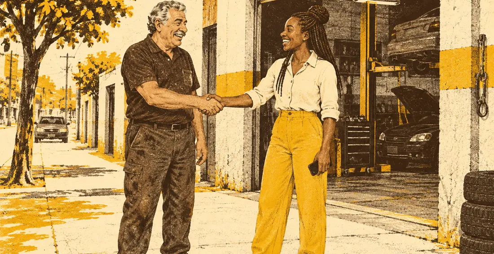
Acordo na calçada
B2B
Seu Antônio e Camila · LP Veículo, comércio de bairro
Ver prompt
Artistic editorial illustration with a handmade risograph print look, like a contemporary independent magazine illustration. Visible grain and stippled texture inside every color shape, slightly misregistered color layers, imperfect hand-cut shape edges, a few loose dry-brush strokes, no gradients, no clean vector look, no stock illustration look. Limited two-ink riso palette on warm off-white paper: deep espresso brown #371B01 and golden yellow #FFB800, plus the paper color showing through; overlaps of the two inks create a darker brown; skin tones made with lighter or denser espresso halftone so different skin colors read clearly. Slightly exaggerated proportions: long arms, big expressive hands, small head. Lots of empty paper space. No text, no letters, no numbers, no logos.
Character: Seu Antônio, 55, white Brazilian man, graying hair, mustache, work apron; Camila, 26, Black Brazilian woman, tied-up braids, below-knee running prosthesis.
Scene: handshake on the sidewalk in front of a neighborhood auto shop.
ilustracoes/b2b-11-aperto-oficina.webp
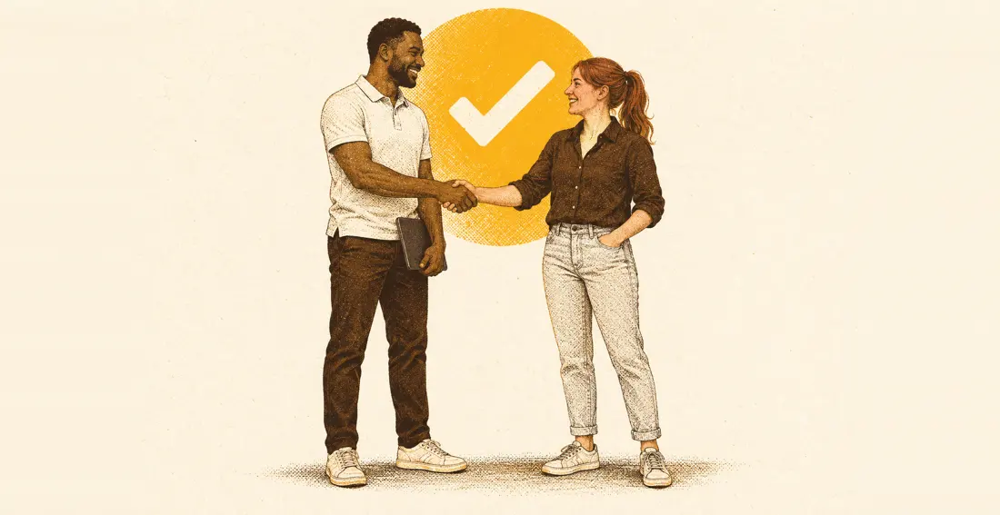
Negócio aprovado
B2B
Rafael e Fernanda · CTA B2B, proposta
Ver prompt
Artistic editorial illustration with a handmade risograph print look, like a contemporary independent magazine illustration. Visible grain and stippled texture inside every color shape, slightly misregistered color layers, imperfect hand-cut shape edges, a few loose dry-brush strokes, no gradients, no clean vector look, no stock illustration look. Limited two-ink riso palette on warm off-white paper: deep espresso brown #371B01 and golden yellow #FFB800, plus the paper color showing through; overlaps of the two inks create a darker brown; skin tones made with lighter or denser espresso halftone so different skin colors read clearly. Slightly exaggerated proportions: long arms, big expressive hands, small head. Lots of empty paper space. No text, no letters, no numbers, no logos.
Character: Rafael, 34, Black Brazilian man, short hair, trimmed beard, shirt with rolled sleeves.
Scene: handshake with a large brush-stroke check mark behind them.
ilustracoes/b2b-12-aperto-check.webp
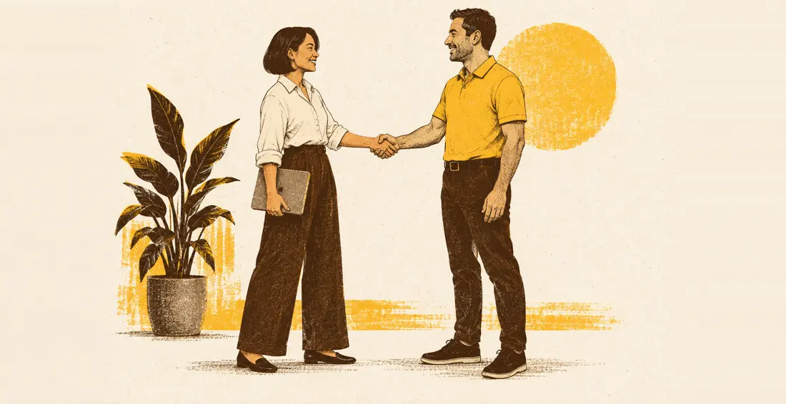
Negócio fechado (casual)
B2B
Marina e Thiago · Hub B2B, parceiros
Ver prompt
Artistic editorial illustration with a handmade risograph print look, like a contemporary independent magazine illustration. Visible grain and stippled texture inside every color shape, slightly misregistered color layers, imperfect hand-cut shape edges, a few loose dry-brush strokes, no gradients, no clean vector look, no stock illustration look. Limited two-ink riso palette on warm off-white paper: deep espresso brown #371B01 and golden yellow #FFB800, plus the paper color showing through; overlaps of the two inks create a darker brown; skin tones made with lighter or denser espresso halftone so different skin colors read clearly. Slightly exaggerated proportions: long arms, big expressive hands, small head. Lots of empty paper space. No text, no letters, no numbers, no logos.
Character: Marina, 36, Japanese-Brazilian woman, black bob haircut, structured blazer; Thiago, 38, light brown-skinned Brazilian man, stubble, button-up or polo shirt.
Scene: casual handshake, polo shirt and blouse, lots of empty paper space.
ilustracoes/b2b-13-aperto-camisa-polo.webp
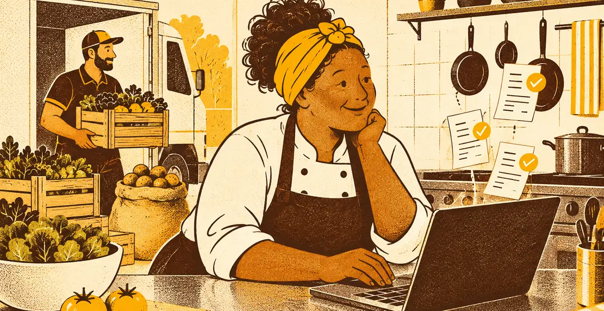
Fornecedores em dia
B2B
Dona Rosa · Hub B2B, capital de giro
Ver prompt
Artistic editorial illustration with a handmade risograph print look, like a contemporary independent magazine illustration. Visible grain and stippled texture inside every color shape, slightly misregistered color layers, imperfect hand-cut shape edges, a few loose dry-brush strokes, no gradients, no clean vector look, no stock illustration look. Limited two-ink riso palette on warm off-white paper: deep espresso brown #371B01 and golden yellow #FFB800, plus the paper color showing through; overlaps of the two inks create a darker brown; skin tones made with lighter or denser espresso halftone so different skin colors read clearly. Slightly exaggerated proportions: long arms, big expressive hands, small head. Lots of empty paper space. No text, no letters, no numbers, no logos.
Character: Dona Rosa.
Scene: restaurant owner receiving supplier boxes, kitchen in the background.
ilustracoes/b2b-05-restaurante-fornecedores.webp
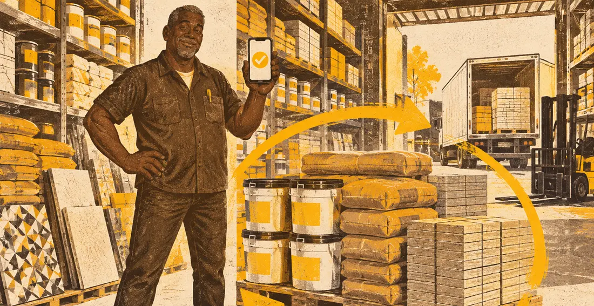
Estoque girando
B2B
Jorge · Hub B2B, capital de giro
Ver prompt
Artistic editorial illustration with a handmade risograph print look, like a contemporary independent magazine illustration. Visible grain and stippled texture inside every color shape, slightly misregistered color layers, imperfect hand-cut shape edges, a few loose dry-brush strokes, no gradients, no clean vector look, no stock illustration look. Limited two-ink riso palette on warm off-white paper: deep espresso brown #371B01 and golden yellow #FFB800, plus the paper color showing through; overlaps of the two inks create a darker brown; skin tones made with lighter or denser espresso halftone so different skin colors read clearly. Slightly exaggerated proportions: long arms, big expressive hands, small head. Lots of empty paper space. No text, no letters, no numbers, no logos.
Character: Jorge.
Scene: organizing stock on shelves in a small store, energetic.
ilustracoes/b2b-06-estoque-capital-de-giro.webp
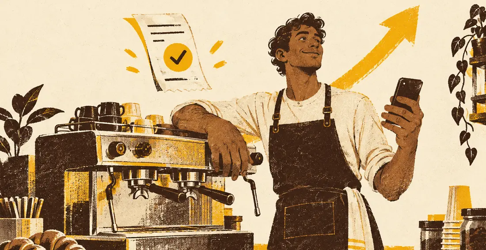
Equipamento parcelado
B2B
Lucas · Hub B2B, empreendedores
Ver prompt
Artistic editorial illustration with a handmade risograph print look, like a contemporary independent magazine illustration. Visible grain and stippled texture inside every color shape, slightly misregistered color layers, imperfect hand-cut shape edges, a few loose dry-brush strokes, no gradients, no clean vector look, no stock illustration look. Limited two-ink riso palette on warm off-white paper: deep espresso brown #371B01 and golden yellow #FFB800, plus the paper color showing through; overlaps of the two inks create a darker brown; skin tones made with lighter or denser espresso halftone so different skin colors read clearly. Slightly exaggerated proportions: long arms, big expressive hands, small head. Lots of empty paper space. No text, no letters, no numbers, no logos.
Character: Lucas, 19, tan Brazilian young man, wavy hair, hoodie and backpack.
Scene: young café owner next to a new espresso machine, proud.
ilustracoes/b2b-07-cafeteria-equipamento.webp
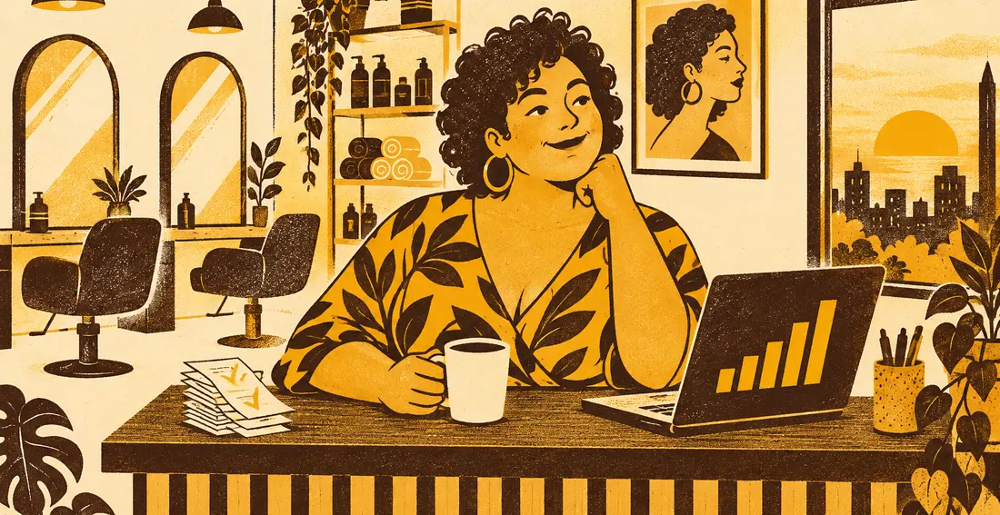
Caixa saudável
B2B
Patrícia · Hub B2B, fôlego de caixa
Ver prompt
Artistic editorial illustration with a handmade risograph print look, like a contemporary independent magazine illustration. Visible grain and stippled texture inside every color shape, slightly misregistered color layers, imperfect hand-cut shape edges, a few loose dry-brush strokes, no gradients, no clean vector look, no stock illustration look. Limited two-ink riso palette on warm off-white paper: deep espresso brown #371B01 and golden yellow #FFB800, plus the paper color showing through; overlaps of the two inks create a darker brown; skin tones made with lighter or denser espresso halftone so different skin colors read clearly. Slightly exaggerated proportions: long arms, big expressive hands, small head. Lots of empty paper space. No text, no letters, no numbers, no logos.
Character: Patrícia, 40, plus-size tan Brazilian woman, short curls, wrap dress.
Scene: hair salon owner at the reception looking at a tablet, calm and confident.
ilustracoes/b2b-08-salao-caixa-saudavel.webp
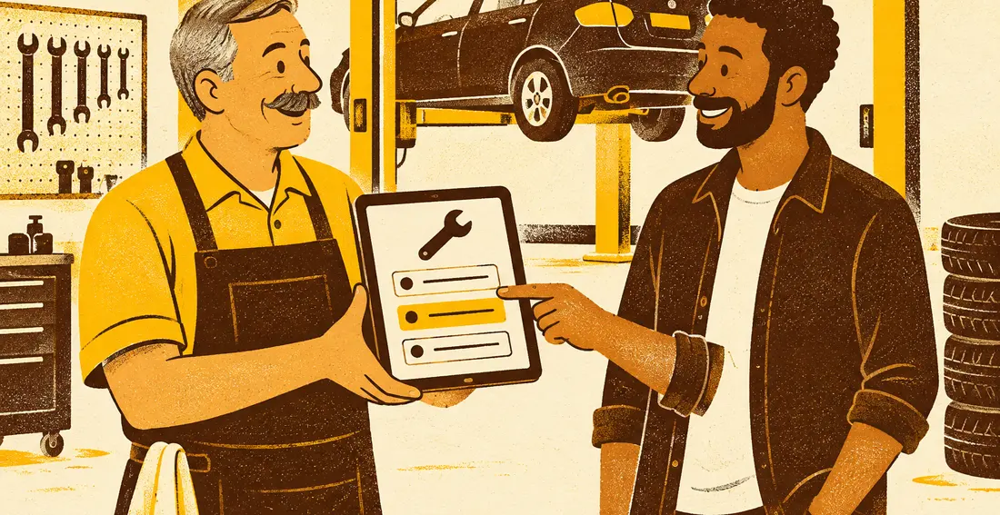
Checkout com a marca da oficina
B2B2C
Seu Antônio e Rafael · Tecnologia, white label
Ver prompt
Artistic editorial illustration with a handmade risograph print look, like a contemporary independent magazine illustration. Visible grain and stippled texture inside every color shape, slightly misregistered color layers, imperfect hand-cut shape edges, a few loose dry-brush strokes, no gradients, no clean vector look, no stock illustration look. Limited two-ink riso palette on warm off-white paper: deep espresso brown #371B01 and golden yellow #FFB800, plus the paper color showing through; overlaps of the two inks create a darker brown; skin tones made with lighter or denser espresso halftone so different skin colors read clearly. Slightly exaggerated proportions: long arms, big expressive hands, small head. Lots of empty paper space. No text, no letters, no numbers, no logos.
Character: Seu Antônio, 55, white Brazilian man, graying hair, mustache, work apron; Rafael, 34, Black Brazilian man, short hair, trimmed beard, shirt with rolled sleeves.
Scene: shop owner shows a tablet checkout to a customer.
ilustracoes/b2b2c-01-oficina-tablet-marca.webp
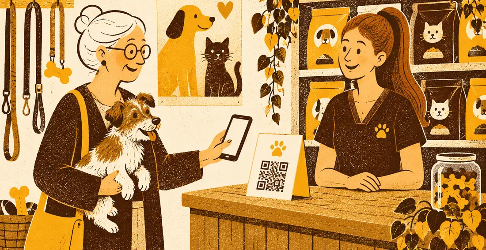
QR code no balcão
B2B2C
Fernanda e Dona Cida · Parcerias, comércio
Ver prompt
Artistic editorial illustration with a handmade risograph print look, like a contemporary independent magazine illustration. Visible grain and stippled texture inside every color shape, slightly misregistered color layers, imperfect hand-cut shape edges, a few loose dry-brush strokes, no gradients, no clean vector look, no stock illustration look. Limited two-ink riso palette on warm off-white paper: deep espresso brown #371B01 and golden yellow #FFB800, plus the paper color showing through; overlaps of the two inks create a darker brown; skin tones made with lighter or denser espresso halftone so different skin colors read clearly. Slightly exaggerated proportions: long arms, big expressive hands, small head. Lots of empty paper space. No text, no letters, no numbers, no logos.
Character: Dona Cida, 70, white Brazilian elderly woman, white hair in a bun, glasses, cardigan.
Scene: pet shop counter, elderly customer scans a QR code with her phone.
ilustracoes/b2b2c-02-petshop-qrcode.webp
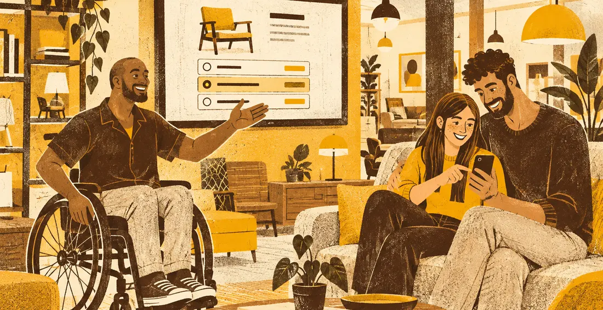
Clientes parcelando na loja
B2B2C
Bruno, Júlia e cliente · Parcerias, varejo
Ver prompt
Artistic editorial illustration with a handmade risograph print look, like a contemporary independent magazine illustration. Visible grain and stippled texture inside every color shape, slightly misregistered color layers, imperfect hand-cut shape edges, a few loose dry-brush strokes, no gradients, no clean vector look, no stock illustration look. Limited two-ink riso palette on warm off-white paper: deep espresso brown #371B01 and golden yellow #FFB800, plus the paper color showing through; overlaps of the two inks create a darker brown; skin tones made with lighter or denser espresso halftone so different skin colors read clearly. Slightly exaggerated proportions: long arms, big expressive hands, small head. Lots of empty paper space. No text, no letters, no numbers, no logos.
Character: Bruno, 30, brown-skinned Brazilian man, shaved head, beard, manual wheelchair user; Júlia, 22, white Brazilian woman with freckles, straight shoulder-length hair, knit sweater.
Scene: furniture store, customers paying online on their phones, owner in wheelchair helping.
ilustracoes/b2b2c-03-loja-moveis-checkout.webp
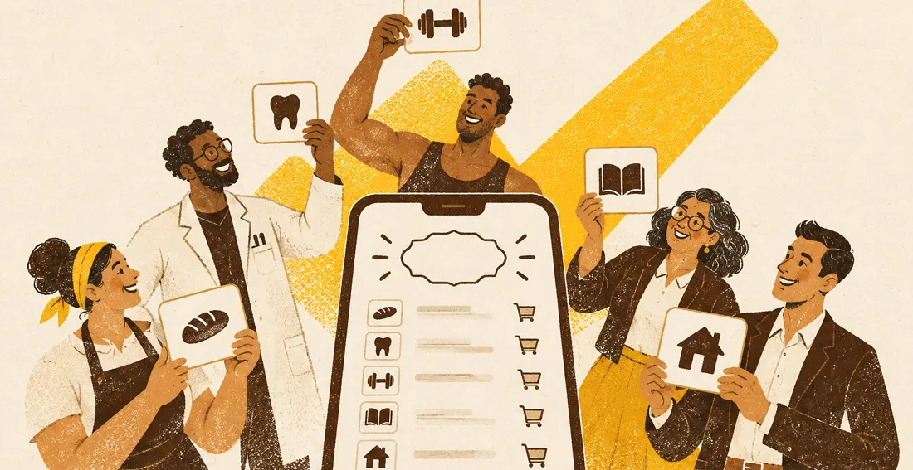
Uma plataforma, várias marcas
B2B2C
Comerciantes diversos · Tecnologia, white label
Ver prompt
Artistic editorial illustration with a handmade risograph print look, like a contemporary independent magazine illustration. Visible grain and stippled texture inside every color shape, slightly misregistered color layers, imperfect hand-cut shape edges, a few loose dry-brush strokes, no gradients, no clean vector look, no stock illustration look. Limited two-ink riso palette on warm off-white paper: deep espresso brown #371B01 and golden yellow #FFB800, plus the paper color showing through; overlaps of the two inks create a darker brown; skin tones made with lighter or denser espresso halftone so different skin colors read clearly. Slightly exaggerated proportions: long arms, big expressive hands, small head. Lots of empty paper space. No text, no letters, no numbers, no logos.
Character: Comerciantes diversos.
Scene: a row of diverse small business owners each holding a phone, side by side.
ilustracoes/b2b2c-04-whitelabel-comerciantes.webp
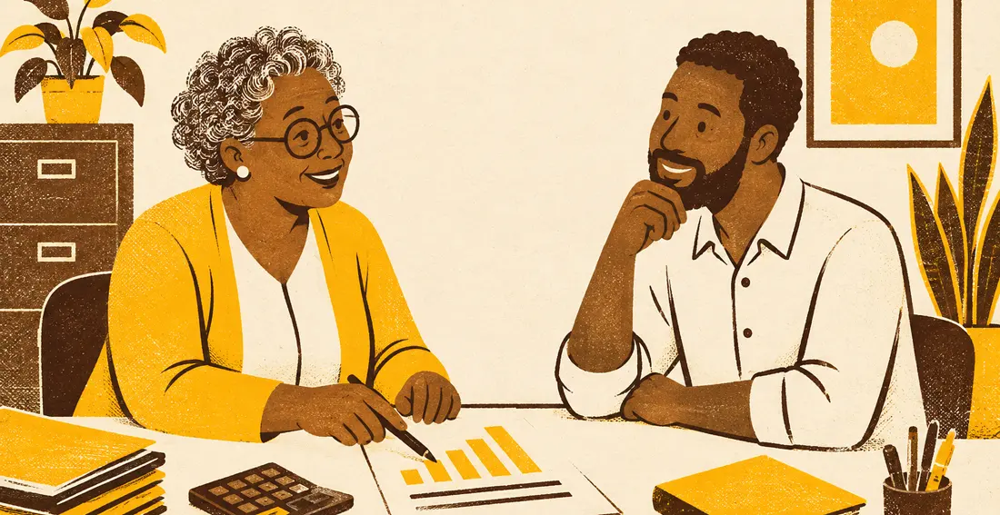
Contadora orienta o cliente
Parcerias
Dona Lúcia e Rafael · LP Contabilidades
Ver prompt
Artistic editorial illustration with a handmade risograph print look, like a contemporary independent magazine illustration. Visible grain and stippled texture inside every color shape, slightly misregistered color layers, imperfect hand-cut shape edges, a few loose dry-brush strokes, no gradients, no clean vector look, no stock illustration look. Limited two-ink riso palette on warm off-white paper: deep espresso brown #371B01 and golden yellow #FFB800, plus the paper color showing through; overlaps of the two inks create a darker brown; skin tones made with lighter or denser espresso halftone so different skin colors read clearly. Slightly exaggerated proportions: long arms, big expressive hands, small head. Lots of empty paper space. No text, no letters, no numbers, no logos.
Character: Dona Lúcia, 52, Black Brazilian woman, short gray hair, round glasses, cardigan; Rafael, 34, Black Brazilian man, short hair, trimmed beard, shirt with rolled sleeves.
Scene: accountant explaining documents to a client across a desk.
ilustracoes/parc-01-contadora-orienta.webp
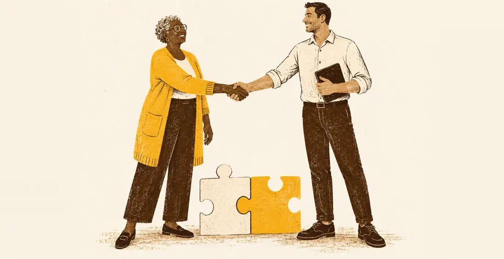
Acordo de parceria
Parcerias
Dona Lúcia e Thiago · Seja parceiro
Ver prompt
Artistic editorial illustration with a handmade risograph print look, like a contemporary independent magazine illustration. Visible grain and stippled texture inside every color shape, slightly misregistered color layers, imperfect hand-cut shape edges, a few loose dry-brush strokes, no gradients, no clean vector look, no stock illustration look. Limited two-ink riso palette on warm off-white paper: deep espresso brown #371B01 and golden yellow #FFB800, plus the paper color showing through; overlaps of the two inks create a darker brown; skin tones made with lighter or denser espresso halftone so different skin colors read clearly. Slightly exaggerated proportions: long arms, big expressive hands, small head. Lots of empty paper space. No text, no letters, no numbers, no logos.
Character: Dona Lúcia, 52, Black Brazilian woman, short gray hair, round glasses, cardigan; Thiago, 38, light brown-skinned Brazilian man, stubble, button-up or polo shirt.
Scene: partnership handshake over a desk with papers.
ilustracoes/parc-02-acordo-parceria.webp
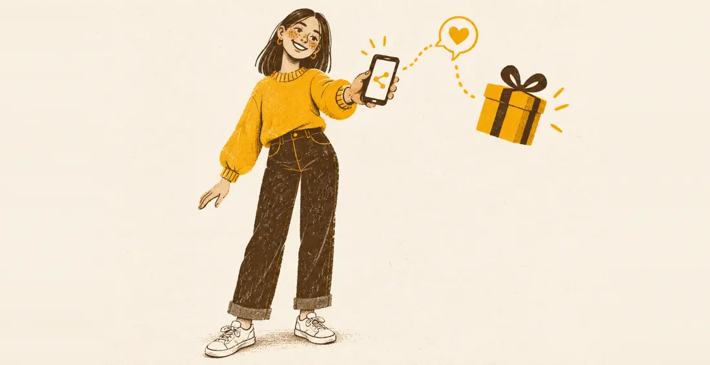
Indique e ganhe
Parcerias
Júlia · Página Indique e ganhe
Ver prompt
Artistic editorial illustration with a handmade risograph print look, like a contemporary independent magazine illustration. Visible grain and stippled texture inside every color shape, slightly misregistered color layers, imperfect hand-cut shape edges, a few loose dry-brush strokes, no gradients, no clean vector look, no stock illustration look. Limited two-ink riso palette on warm off-white paper: deep espresso brown #371B01 and golden yellow #FFB800, plus the paper color showing through; overlaps of the two inks create a darker brown; skin tones made with lighter or denser espresso halftone so different skin colors read clearly. Slightly exaggerated proportions: long arms, big expressive hands, small head. Lots of empty paper space. No text, no letters, no numbers, no logos.
Character: Júlia, 22, white Brazilian woman with freckles, straight shoulder-length hair, knit sweater.
Scene: sharing a link on her phone, small gift box and sparkles floating.
ilustracoes/parc-03-indique-e-ganhe.webp
Escritório jurídico
Parcerias
Marina · LP Setor jurídico
Ver prompt
Artistic editorial illustration with a handmade risograph print look, like a contemporary independent magazine illustration. Visible grain and stippled texture inside every color shape, slightly misregistered color layers, imperfect hand-cut shape edges, a few loose dry-brush strokes, no gradients, no clean vector look, no stock illustration look. Limited two-ink riso palette on warm off-white paper: deep espresso brown #371B01 and golden yellow #FFB800, plus the paper color showing through; overlaps of the two inks create a darker brown; skin tones made with lighter or denser espresso halftone so different skin colors read clearly. Slightly exaggerated proportions: long arms, big expressive hands, small head. Lots of empty paper space. No text, no letters, no numbers, no logos.
Character: Marina, 36, Japanese-Brazilian woman, black bob haircut, structured blazer.
Scene: lawyer at her desk with a balance scale object and folders.
ilustracoes/parc-04-juridico.webp
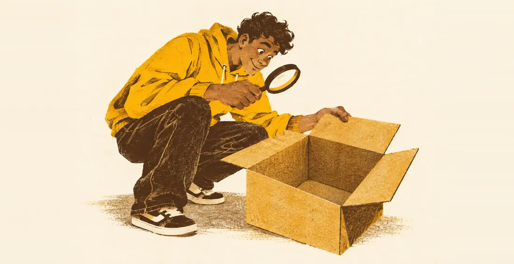
Nada por aqui ainda
Sistema
Lucas · Estado vazio
Ver prompt
Artistic editorial illustration with a handmade risograph print look, like a contemporary independent magazine illustration. Visible grain and stippled texture inside every color shape, slightly misregistered color layers, imperfect hand-cut shape edges, a few loose dry-brush strokes, no gradients, no clean vector look, no stock illustration look. Limited two-ink riso palette on warm off-white paper: deep espresso brown #371B01 and golden yellow #FFB800, plus the paper color showing through; overlaps of the two inks create a darker brown; skin tones made with lighter or denser espresso halftone so different skin colors read clearly. Slightly exaggerated proportions: long arms, big expressive hands, small head. Lots of empty paper space. No text, no letters, no numbers, no logos.
Character: Lucas, 19, tan Brazilian young man, wavy hair, hoodie and backpack.
Scene: looking into an empty open box, curious, lots of empty space.
ilustracoes/sis-01-estado-vazio.webp
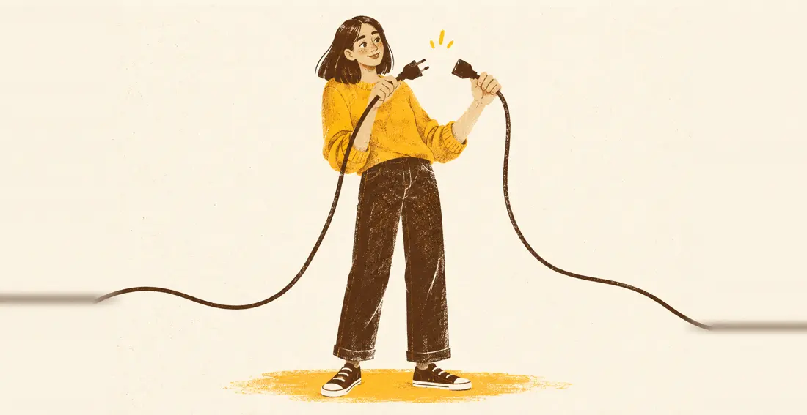
Algo deu errado
Sistema
Júlia · Erro, página 404
Ver prompt
Artistic editorial illustration with a handmade risograph print look, like a contemporary independent magazine illustration. Visible grain and stippled texture inside every color shape, slightly misregistered color layers, imperfect hand-cut shape edges, a few loose dry-brush strokes, no gradients, no clean vector look, no stock illustration look. Limited two-ink riso palette on warm off-white paper: deep espresso brown #371B01 and golden yellow #FFB800, plus the paper color showing through; overlaps of the two inks create a darker brown; skin tones made with lighter or denser espresso halftone so different skin colors read clearly. Slightly exaggerated proportions: long arms, big expressive hands, small head. Lots of empty paper space. No text, no letters, no numbers, no logos.
Character: Júlia, 22, white Brazilian woman with freckles, straight shoulder-length hair, knit sweater.
Scene: frustrated looking at a laptop, a broken connection cable and a small cloud with an x.
ilustracoes/sis-02-erro.webp
Atendimento humano
Sistema
Thiago · Central de ajuda, contato
Ver prompt
Artistic editorial illustration with a handmade risograph print look, like a contemporary independent magazine illustration. Visible grain and stippled texture inside every color shape, slightly misregistered color layers, imperfect hand-cut shape edges, a few loose dry-brush strokes, no gradients, no clean vector look, no stock illustration look. Limited two-ink riso palette on warm off-white paper: deep espresso brown #371B01 and golden yellow #FFB800, plus the paper color showing through; overlaps of the two inks create a darker brown; skin tones made with lighter or denser espresso halftone so different skin colors read clearly. Slightly exaggerated proportions: long arms, big expressive hands, small head. Lots of empty paper space. No text, no letters, no numbers, no logos.
Character: Thiago, 38, light brown-skinned Brazilian man, stubble, button-up or polo shirt.
Scene: support agent with headset smiling, speech bubble with three dots.
ilustracoes/sis-03-suporte.webp
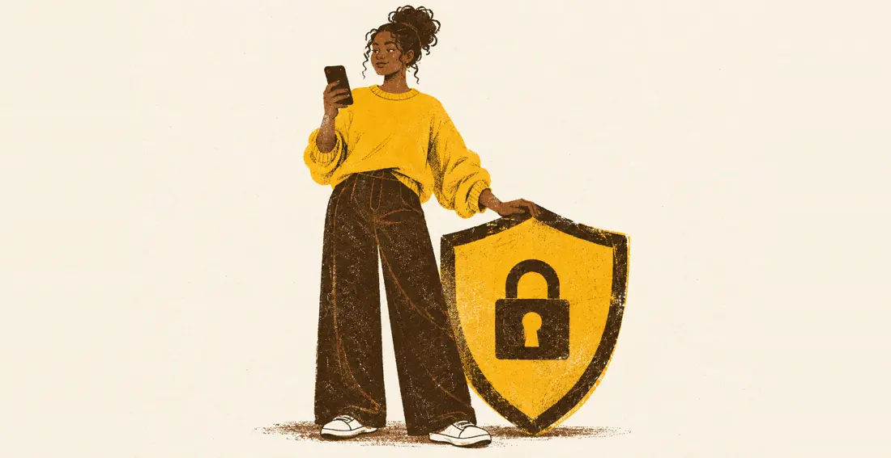
Segurança
Sistema
Ana · Página Segurança
Ver prompt
Artistic editorial illustration with a handmade risograph print look, like a contemporary independent magazine illustration. Visible grain and stippled texture inside every color shape, slightly misregistered color layers, imperfect hand-cut shape edges, a few loose dry-brush strokes, no gradients, no clean vector look, no stock illustration look. Limited two-ink riso palette on warm off-white paper: deep espresso brown #371B01 and golden yellow #FFB800, plus the paper color showing through; overlaps of the two inks create a darker brown; skin tones made with lighter or denser espresso halftone so different skin colors read clearly. Slightly exaggerated proportions: long arms, big expressive hands, small head. Lots of empty paper space. No text, no letters, no numbers, no logos.
Character: Ana, 28, Brazilian brown-skinned woman, curly hair in a high bun, oversized sweater.
Scene: standing next to a big shield with a padlock, confident.
ilustracoes/sis-04-seguranca.webp
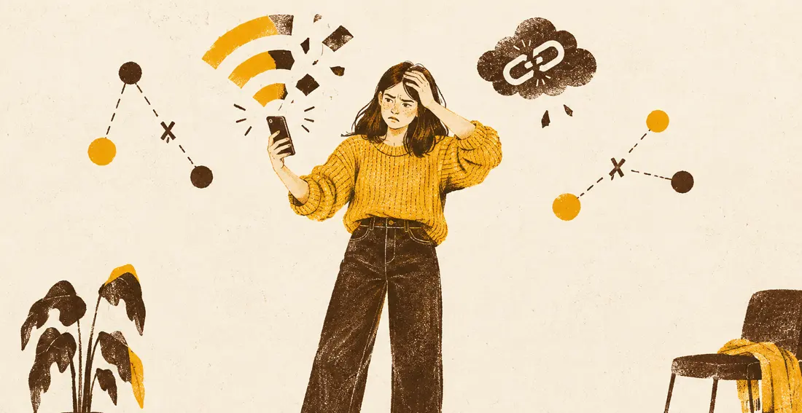
Sem conexão
Sistema
Júlia · Erro de rede, sistema fora do ar
Ver prompt
Artistic editorial illustration with a handmade risograph print look, like a contemporary independent magazine illustration. Visible grain and stippled texture inside every color shape, slightly misregistered color layers, imperfect hand-cut shape edges, a few loose dry-brush strokes, no gradients, no clean vector look, no stock illustration look. Limited two-ink riso palette on warm off-white paper: deep espresso brown #371B01 and golden yellow #FFB800, plus the paper color showing through; overlaps of the two inks create a darker brown; skin tones made with lighter or denser espresso halftone so different skin colors read clearly. Slightly exaggerated proportions: long arms, big expressive hands, small head. Lots of empty paper space. No text, no letters, no numbers, no logos.
Character: Júlia, 22, white Brazilian woman with freckles, straight shoulder-length hair, knit sweater.
Scene: holding a phone with no signal, wifi symbol crossed, mild frustration.
ilustracoes/sis-05-erro-conexao.webp
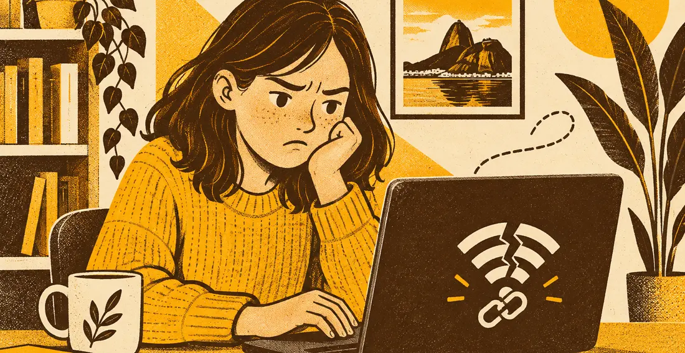
Falha no computador
Sistema
Júlia · Erro no checkout, plano fechado
Ver prompt
Artistic editorial illustration with a handmade risograph print look, like a contemporary independent magazine illustration. Visible grain and stippled texture inside every color shape, slightly misregistered color layers, imperfect hand-cut shape edges, a few loose dry-brush strokes, no gradients, no clean vector look, no stock illustration look. Limited two-ink riso palette on warm off-white paper: deep espresso brown #371B01 and golden yellow #FFB800, plus the paper color showing through; overlaps of the two inks create a darker brown; skin tones made with lighter or denser espresso halftone so different skin colors read clearly. Slightly exaggerated proportions: long arms, big expressive hands, small head. Lots of empty paper space. No text, no letters, no numbers, no logos.
Character: Júlia, 22, white Brazilian woman with freckles, straight shoulder-length hair, knit sweater.
Scene: hands on head in front of a laptop with a warning sign, home desk.
ilustracoes/sis-06-erro-laptop.webp
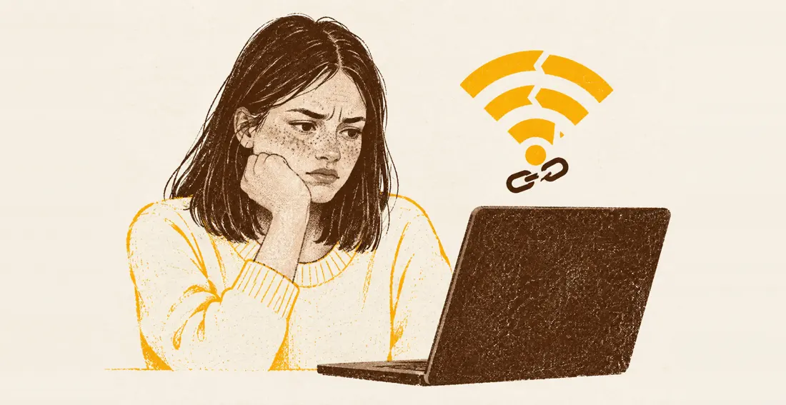
Falha no computador (fundo limpo)
Sistema
Júlia · Modal de erro, cards pequenos
Ver prompt
Artistic editorial illustration with a handmade risograph print look, like a contemporary independent magazine illustration. Visible grain and stippled texture inside every color shape, slightly misregistered color layers, imperfect hand-cut shape edges, a few loose dry-brush strokes, no gradients, no clean vector look, no stock illustration look. Limited two-ink riso palette on warm off-white paper: deep espresso brown #371B01 and golden yellow #FFB800, plus the paper color showing through; overlaps of the two inks create a darker brown; skin tones made with lighter or denser espresso halftone so different skin colors read clearly. Slightly exaggerated proportions: long arms, big expressive hands, small head. Lots of empty paper space. No text, no letters, no numbers, no logos.
Character: Júlia, 22, white Brazilian woman with freckles, straight shoulder-length hair, knit sweater.
Scene: same error scene on a clean plain paper background.
ilustracoes/sis-07-erro-laptop-limpo.webp
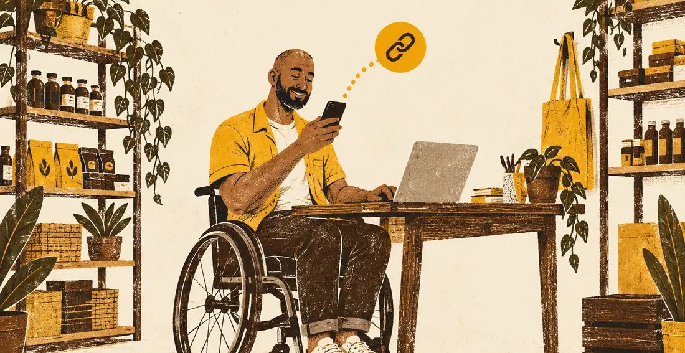
Link de pagamento
Diversidade
Bruno · Hub B2B, empreendedores
Ver prompt
Artistic editorial illustration with a handmade risograph print look, like a contemporary independent magazine illustration. Visible grain and stippled texture inside every color shape, slightly misregistered color layers, imperfect hand-cut shape edges, a few loose dry-brush strokes, no gradients, no clean vector look, no stock illustration look. Limited two-ink riso palette on warm off-white paper: deep espresso brown #371B01 and golden yellow #FFB800, plus the paper color showing through; overlaps of the two inks create a darker brown; skin tones made with lighter or denser espresso halftone so different skin colors read clearly. Slightly exaggerated proportions: long arms, big expressive hands, small head. Lots of empty paper space. No text, no letters, no numbers, no logos.
Character: Bruno, 30, brown-skinned Brazilian man, shaved head, beard, manual wheelchair user.
Scene: in his store sending a payment link from his phone, shelves behind.
ilustracoes/inc-01-cadeirante-loja.webp
Boletos para o alto
Liberdade
Ana e Rafael · Hero B2C, CTA final
Ver prompt
Artistic editorial illustration with a handmade risograph print look, like a contemporary independent magazine illustration. Visible grain and stippled texture inside every color shape, slightly misregistered color layers, imperfect hand-cut shape edges, a few loose dry-brush strokes, no gradients, no clean vector look, no stock illustration look. Limited two-ink riso palette on warm off-white paper: deep espresso brown #371B01 and golden yellow #FFB800, plus the paper color showing through; overlaps of the two inks create a darker brown; skin tones made with lighter or denser espresso halftone so different skin colors read clearly. Slightly exaggerated proportions: long arms, big expressive hands, small head. Lots of empty paper space. No text, no letters, no numbers, no logos.
Character: Ana, 28, Brazilian brown-skinned woman, curly hair in a high bun, oversized sweater; Rafael, 34, Black Brazilian man, short hair, trimmed beard, shirt with rolled sleeves.
Scene: couple jumping with joy, bills flying up into the air, big check mark behind.
ilustracoes/lib-01-casal-boletos-voando.webp
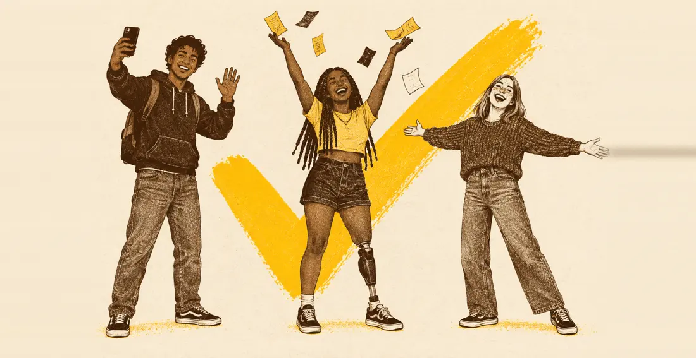
Jovens livres
Liberdade
Lucas, Camila e Júlia · Indique e ganhe, B2C jovem
Ver prompt
Artistic editorial illustration with a handmade risograph print look, like a contemporary independent magazine illustration. Visible grain and stippled texture inside every color shape, slightly misregistered color layers, imperfect hand-cut shape edges, a few loose dry-brush strokes, no gradients, no clean vector look, no stock illustration look. Limited two-ink riso palette on warm off-white paper: deep espresso brown #371B01 and golden yellow #FFB800, plus the paper color showing through; overlaps of the two inks create a darker brown; skin tones made with lighter or denser espresso halftone so different skin colors read clearly. Slightly exaggerated proportions: long arms, big expressive hands, small head. Lots of empty paper space. No text, no letters, no numbers, no logos.
Character: Lucas, 19, tan Brazilian young man, wavy hair, hoodie and backpack; Camila, 26, Black Brazilian woman, tied-up braids, below-knee running prosthesis; Júlia, 22, white Brazilian woman with freckles, straight shoulder-length hair, knit sweater.
Scene: three young friends laughing together outdoors, free and light.
ilustracoes/lib-02-jovens-felizes.webp
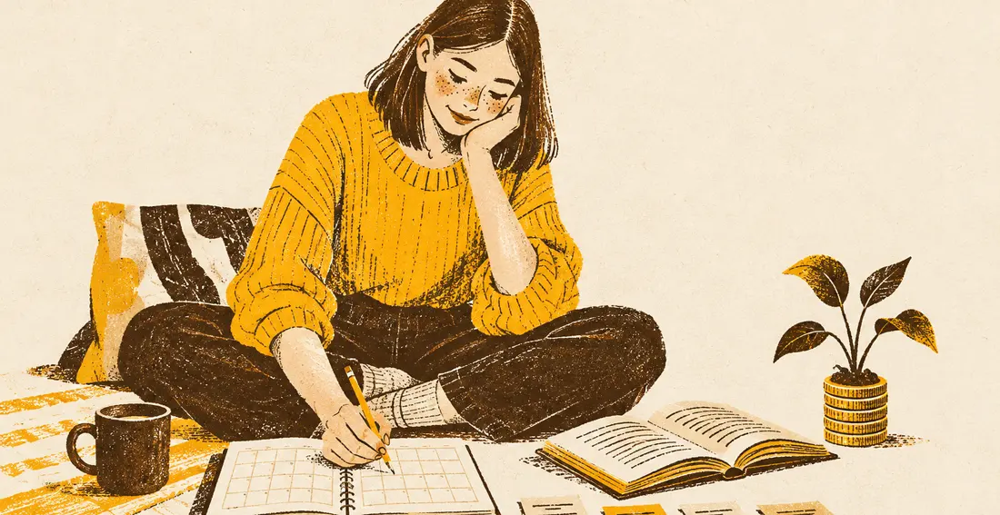
Planejando o mês
Liberdade
Júlia · Blog, educação financeira
Ver prompt
Artistic editorial illustration with a handmade risograph print look, like a contemporary independent magazine illustration. Visible grain and stippled texture inside every color shape, slightly misregistered color layers, imperfect hand-cut shape edges, a few loose dry-brush strokes, no gradients, no clean vector look, no stock illustration look. Limited two-ink riso palette on warm off-white paper: deep espresso brown #371B01 and golden yellow #FFB800, plus the paper color showing through; overlaps of the two inks create a darker brown; skin tones made with lighter or denser espresso halftone so different skin colors read clearly. Slightly exaggerated proportions: long arms, big expressive hands, small head. Lots of empty paper space. No text, no letters, no numbers, no logos.
Character: Júlia, 22, white Brazilian woman with freckles, straight shoulder-length hair, knit sweater.
Scene: planning the month with a notebook and calendar, cup of coffee.
ilustracoes/lib-03-educacao-financeira.webp
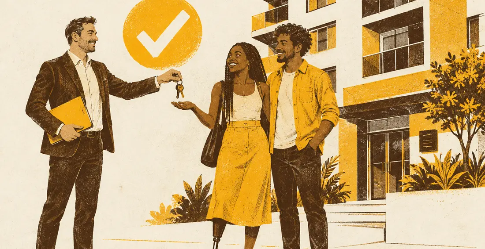
Chaves do apartamento
Verticais
Thiago, Camila e Lucas · LP Imobiliárias
Ver prompt
Artistic editorial illustration with a handmade risograph print look, like a contemporary independent magazine illustration. Visible grain and stippled texture inside every color shape, slightly misregistered color layers, imperfect hand-cut shape edges, a few loose dry-brush strokes, no gradients, no clean vector look, no stock illustration look. Limited two-ink riso palette on warm off-white paper: deep espresso brown #371B01 and golden yellow #FFB800, plus the paper color showing through; overlaps of the two inks create a darker brown; skin tones made with lighter or denser espresso halftone so different skin colors read clearly. Slightly exaggerated proportions: long arms, big expressive hands, small head. Lots of empty paper space. No text, no letters, no numbers, no logos.
Character: Thiago, 38, light brown-skinned Brazilian man, stubble, button-up or polo shirt; Camila, 26, Black Brazilian woman, tied-up braids, below-knee running prosthesis; Lucas, 19, tan Brazilian young man, wavy hair, hoodie and backpack.
Scene: real estate agent handing apartment keys to a young couple.
ilustracoes/vert-01-imobiliaria.webp
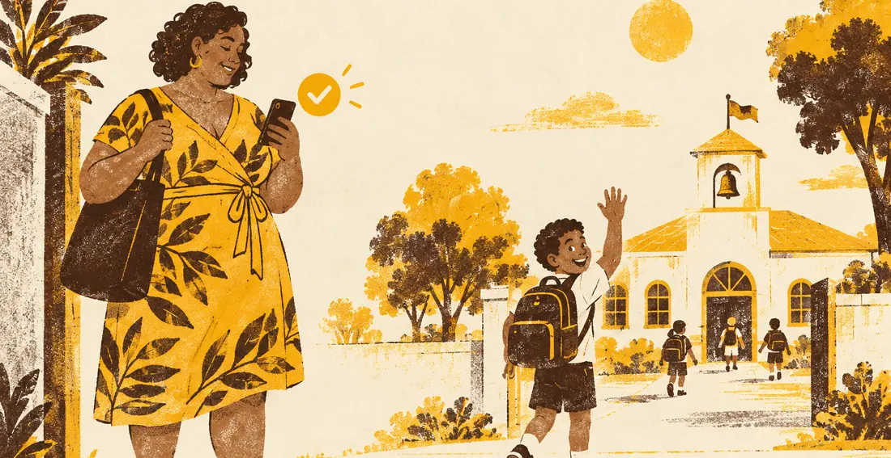
Mensalidade organizada
Verticais
Patrícia e filho · LP Educação
Ver prompt
Artistic editorial illustration with a handmade risograph print look, like a contemporary independent magazine illustration. Visible grain and stippled texture inside every color shape, slightly misregistered color layers, imperfect hand-cut shape edges, a few loose dry-brush strokes, no gradients, no clean vector look, no stock illustration look. Limited two-ink riso palette on warm off-white paper: deep espresso brown #371B01 and golden yellow #FFB800, plus the paper color showing through; overlaps of the two inks create a darker brown; skin tones made with lighter or denser espresso halftone so different skin colors read clearly. Slightly exaggerated proportions: long arms, big expressive hands, small head. Lots of empty paper space. No text, no letters, no numbers, no logos.
Character: Patrícia, 40, plus-size tan Brazilian woman, short curls, wrap dress.
Scene: mother and son at a school gate, backpack, smiling.
ilustracoes/vert-02-escola.webp
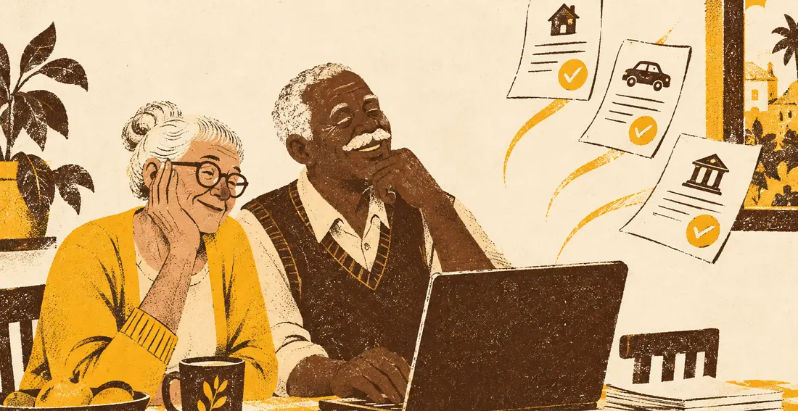
Tributos em dia
Verticais
Dona Cida e Seu Zé · IPTU, IPVA, impostos
Ver prompt
Artistic editorial illustration with a handmade risograph print look, like a contemporary independent magazine illustration. Visible grain and stippled texture inside every color shape, slightly misregistered color layers, imperfect hand-cut shape edges, a few loose dry-brush strokes, no gradients, no clean vector look, no stock illustration look. Limited two-ink riso palette on warm off-white paper: deep espresso brown #371B01 and golden yellow #FFB800, plus the paper color showing through; overlaps of the two inks create a darker brown; skin tones made with lighter or denser espresso halftone so different skin colors read clearly. Slightly exaggerated proportions: long arms, big expressive hands, small head. Lots of empty paper space. No text, no letters, no numbers, no logos.
Character: Dona Cida, 70, white Brazilian elderly woman, white hair in a bun, glasses, cardigan; Seu Zé, 72, Black Brazilian elderly man, white hair and mustache, knitted vest.
Scene: elderly couple at home sorting tax slips on a tablet.
ilustracoes/vert-03-tributos.webp
Escritório contábil
Verticais
Marcos · LP Contabilidades
Ver prompt
Artistic editorial illustration with a handmade risograph print look, like a contemporary independent magazine illustration. Visible grain and stippled texture inside every color shape, slightly misregistered color layers, imperfect hand-cut shape edges, a few loose dry-brush strokes, no gradients, no clean vector look, no stock illustration look. Limited two-ink riso palette on warm off-white paper: deep espresso brown #371B01 and golden yellow #FFB800, plus the paper color showing through; overlaps of the two inks create a darker brown; skin tones made with lighter or denser espresso halftone so different skin colors read clearly. Slightly exaggerated proportions: long arms, big expressive hands, small head. Lots of empty paper space. No text, no letters, no numbers, no logos.
Character: Marcos, 45, plus-size white Brazilian man, bald, full beard, suspenders.
Scene: accountant in a tidy office with folders and a computer.
ilustracoes/vert-04-contadores.webp
Custas organizadas
Verticais
Marina e Rafael · LP Setor jurídico
Ver prompt
Artistic editorial illustration with a handmade risograph print look, like a contemporary independent magazine illustration. Visible grain and stippled texture inside every color shape, slightly misregistered color layers, imperfect hand-cut shape edges, a few loose dry-brush strokes, no gradients, no clean vector look, no stock illustration look. Limited two-ink riso palette on warm off-white paper: deep espresso brown #371B01 and golden yellow #FFB800, plus the paper color showing through; overlaps of the two inks create a darker brown; skin tones made with lighter or denser espresso halftone so different skin colors read clearly. Slightly exaggerated proportions: long arms, big expressive hands, small head. Lots of empty paper space. No text, no letters, no numbers, no logos.
Character: Marina, 36, Japanese-Brazilian woman, black bob haircut, structured blazer; Rafael, 34, Black Brazilian man, short hair, trimmed beard, shirt with rolled sleeves.
Scene: lawyer explaining court fees to a client.
ilustracoes/vert-05-advogados.webp
Rede de parceiros
Verticais
Dona Lúcia, Marcos, Marina e Bruno · Seja parceiro, Parcerias
Ver prompt
Artistic editorial illustration with a handmade risograph print look, like a contemporary independent magazine illustration. Visible grain and stippled texture inside every color shape, slightly misregistered color layers, imperfect hand-cut shape edges, a few loose dry-brush strokes, no gradients, no clean vector look, no stock illustration look. Limited two-ink riso palette on warm off-white paper: deep espresso brown #371B01 and golden yellow #FFB800, plus the paper color showing through; overlaps of the two inks create a darker brown; skin tones made with lighter or denser espresso halftone so different skin colors read clearly. Slightly exaggerated proportions: long arms, big expressive hands, small head. Lots of empty paper space. No text, no letters, no numbers, no logos.
Character: Dona Lúcia, 52, Black Brazilian woman, short gray hair, round glasses, cardigan; Marcos, 45, plus-size white Brazilian man, bald, full beard, suspenders; Marina, 36, Japanese-Brazilian woman, black bob haircut, structured blazer; Bruno, 30, brown-skinned Brazilian man, shaved head, beard, manual wheelchair user.
Scene: group of four partners standing together, connected.
ilustracoes/vert-06-parceiros.webp
Negócio crescendo
Verticais
Patrícia e Seu Antônio · Hub B2B, empreendedores
Ver prompt
Artistic editorial illustration with a handmade risograph print look, like a contemporary independent magazine illustration. Visible grain and stippled texture inside every color shape, slightly misregistered color layers, imperfect hand-cut shape edges, a few loose dry-brush strokes, no gradients, no clean vector look, no stock illustration look. Limited two-ink riso palette on warm off-white paper: deep espresso brown #371B01 and golden yellow #FFB800, plus the paper color showing through; overlaps of the two inks create a darker brown; skin tones made with lighter or denser espresso halftone so different skin colors read clearly. Slightly exaggerated proportions: long arms, big expressive hands, small head. Lots of empty paper space. No text, no letters, no numbers, no logos.
Character: Patrícia, 40, plus-size tan Brazilian woman, short curls, wrap dress; Seu Antônio, 55, white Brazilian man, graying hair, mustache, work apron.
Scene: two business owners with a small upward arrow and plants growing.
ilustracoes/vert-07-empreendedores.webp
Pagamento confirmado
Diversidade
Camila · Tela de sucesso, hero B2C
Ver prompt
Artistic editorial illustration with a handmade risograph print look, like a contemporary independent magazine illustration. Visible grain and stippled texture inside every color shape, slightly misregistered color layers, imperfect hand-cut shape edges, a few loose dry-brush strokes, no gradients, no clean vector look, no stock illustration look. Limited two-ink riso palette on warm off-white paper: deep espresso brown #371B01 and golden yellow #FFB800, plus the paper color showing through; overlaps of the two inks create a darker brown; skin tones made with lighter or denser espresso halftone so different skin colors read clearly. Slightly exaggerated proportions: long arms, big expressive hands, small head. Lots of empty paper space. No text, no letters, no numbers, no logos.
Character: Camila, 26, Black Brazilian woman, tied-up braids, below-knee running prosthesis.
Scene: celebrating a confirmed payment on her phone, running prosthesis visible.
ilustracoes/inc-02-protese-pagou.webp
Contas organizadas em casa
Diversidade
Dona Cida e Seu Zé · Contas da casa, depoimento
Ver prompt
Artistic editorial illustration with a handmade risograph print look, like a contemporary independent magazine illustration. Visible grain and stippled texture inside every color shape, slightly misregistered color layers, imperfect hand-cut shape edges, a few loose dry-brush strokes, no gradients, no clean vector look, no stock illustration look. Limited two-ink riso palette on warm off-white paper: deep espresso brown #371B01 and golden yellow #FFB800, plus the paper color showing through; overlaps of the two inks create a darker brown; skin tones made with lighter or denser espresso halftone so different skin colors read clearly. Slightly exaggerated proportions: long arms, big expressive hands, small head. Lots of empty paper space. No text, no letters, no numbers, no logos.
Character: Dona Cida, 70, white Brazilian elderly woman, white hair in a bun, glasses, cardigan; Seu Zé, 72, Black Brazilian elderly man, white hair and mustache, knitted vest.
Scene: elderly couple on a sofa organizing bills on a tablet.
ilustracoes/inc-03-casal-idoso-tablet.webp
Recebeu à vista no salão
Diversidade
Patrícia · Hub B2B, serviços
Ver prompt
Artistic editorial illustration with a handmade risograph print look, like a contemporary independent magazine illustration. Visible grain and stippled texture inside every color shape, slightly misregistered color layers, imperfect hand-cut shape edges, a few loose dry-brush strokes, no gradients, no clean vector look, no stock illustration look. Limited two-ink riso palette on warm off-white paper: deep espresso brown #371B01 and golden yellow #FFB800, plus the paper color showing through; overlaps of the two inks create a darker brown; skin tones made with lighter or denser espresso halftone so different skin colors read clearly. Slightly exaggerated proportions: long arms, big expressive hands, small head. Lots of empty paper space. No text, no letters, no numbers, no logos.
Character: Patrícia, 40, plus-size tan Brazilian woman, short curls, wrap dress.
Scene: salon owner receiving payment notification on her phone, happy.
ilustracoes/inc-04-salao-recebeu.webp
Parceria fechada
Diversidade
Marcos e Bruno · Seja parceiro, Contabilidades
Ver prompt
Artistic editorial illustration with a handmade risograph print look, like a contemporary independent magazine illustration. Visible grain and stippled texture inside every color shape, slightly misregistered color layers, imperfect hand-cut shape edges, a few loose dry-brush strokes, no gradients, no clean vector look, no stock illustration look. Limited two-ink riso palette on warm off-white paper: deep espresso brown #371B01 and golden yellow #FFB800, plus the paper color showing through; overlaps of the two inks create a darker brown; skin tones made with lighter or denser espresso halftone so different skin colors read clearly. Slightly exaggerated proportions: long arms, big expressive hands, small head. Lots of empty paper space. No text, no letters, no numbers, no logos.
Character: Marcos, 45, plus-size white Brazilian man, bald, full beard, suspenders; Bruno, 30, brown-skinned Brazilian man, shaved head, beard, manual wheelchair user.
Scene: handshake between accountant and wheelchair user business owner.
Objetos em risografia com fundo transparente, no lugar dos mockups 3D de cartão e boleto. Mockup fica só para mostrar a tela real do produto.
Cartões em leque
Ver prompt
Isolated object illustration on a perfectly plain flat pure white #FFFFFF background, nothing else in the background, no ground, no cast shadow. Handmade risograph print look inside the objects only: grain, stippling, slightly misregistered ink layers, imperfect hand-cut edges. Two-ink palette: deep espresso brown #371B01 and golden yellow #FFB800 on warm off-white. No text, no numbers, no logos.
Object: three credit cards fanned out.
Boleto
Ver prompt
Isolated object illustration on a perfectly plain flat pure white #FFFFFF background, nothing else in the background, no ground, no cast shadow. Handmade risograph print look inside the objects only: grain, stippling, slightly misregistered ink layers, imperfect hand-cut edges. Two-ink palette: deep espresso brown #371B01 and golden yellow #FFB800 on warm off-white. No text, no numbers, no logos.
Object: a paper bank slip with a barcode, slightly curled, with a small check stamp.
Boleto e cartão
Ver prompt
Isolated object illustration on a perfectly plain flat pure white #FFFFFF background, nothing else in the background, no ground, no cast shadow. Handmade risograph print look inside the objects only: grain, stippling, slightly misregistered ink layers, imperfect hand-cut edges. Two-ink palette: deep espresso brown #371B01 and golden yellow #FFB800 on warm off-white. No text, no numbers, no logos.
Object: a bank slip and a credit card overlapping.
Celular com check
Ver prompt
Isolated object illustration on a perfectly plain flat pure white #FFFFFF background, nothing else in the background, no ground, no cast shadow. Handmade risograph print look inside the objects only: grain, stippling, slightly misregistered ink layers, imperfect hand-cut edges. Two-ink palette: deep espresso brown #371B01 and golden yellow #FFB800 on warm off-white. No text, no numbers, no logos.
Object: a smartphone with a big check mark on the screen.
Boletos voando
Ver prompt
Isolated object illustration on a perfectly plain flat pure white #FFFFFF background, nothing else in the background, no ground, no cast shadow. Handmade risograph print look inside the objects only: grain, stippling, slightly misregistered ink layers, imperfect hand-cut edges. Two-ink palette: deep espresso brown #371B01 and golden yellow #FFB800 on warm off-white. No text, no numbers, no logos.
Object: several paper bills flying upward.
Imobiliárias
Ver prompt
Isolated object illustration on a perfectly plain flat pure white #FFFFFF background, nothing else in the background, no ground, no cast shadow. Handmade risograph print look inside the objects only: grain, stippling, slightly misregistered ink layers, imperfect hand-cut edges. Two-ink palette: deep espresso brown #371B01 and golden yellow #FFB800 on warm off-white. No text, no numbers, no logos.
Object: a set of house keys with a tag.
Contabilidades
Ver prompt
Isolated object illustration on a perfectly plain flat pure white #FFFFFF background, nothing else in the background, no ground, no cast shadow. Handmade risograph print look inside the objects only: grain, stippling, slightly misregistered ink layers, imperfect hand-cut edges. Two-ink palette: deep espresso brown #371B01 and golden yellow #FFB800 on warm off-white. No text, no numbers, no logos.
Object: a calculator and a ledger.
Educação
Ver prompt
Isolated object illustration on a perfectly plain flat pure white #FFFFFF background, nothing else in the background, no ground, no cast shadow. Handmade risograph print look inside the objects only: grain, stippling, slightly misregistered ink layers, imperfect hand-cut edges. Two-ink palette: deep espresso brown #371B01 and golden yellow #FFB800 on warm off-white. No text, no numbers, no logos.
Object: a stack of books with a graduation cap.
Setor jurídico
Ver prompt
Isolated object illustration on a perfectly plain flat pure white #FFFFFF background, nothing else in the background, no ground, no cast shadow. Handmade risograph print look inside the objects only: grain, stippling, slightly misregistered ink layers, imperfect hand-cut edges. Two-ink palette: deep espresso brown #371B01 and golden yellow #FFB800 on warm off-white. No text, no numbers, no logos.
Object: a balance scale.
Veículos
Ver prompt
Isolated object illustration on a perfectly plain flat pure white #FFFFFF background, nothing else in the background, no ground, no cast shadow. Handmade risograph print look inside the objects only: grain, stippling, slightly misregistered ink layers, imperfect hand-cut edges. Two-ink palette: deep espresso brown #371B01 and golden yellow #FFB800 on warm off-white. No text, no numbers, no logos.
Object: a car key with a remote.
Tributos
Ver prompt
Isolated object illustration on a perfectly plain flat pure white #FFFFFF background, nothing else in the background, no ground, no cast shadow. Handmade risograph print look inside the objects only: grain, stippling, slightly misregistered ink layers, imperfect hand-cut edges. Two-ink palette: deep espresso brown #371B01 and golden yellow #FFB800 on warm off-white. No text, no numbers, no logos.
Object: tax payment slips with a stamp.
Foto ou ilustração?
Use
Para
Onde
Foto
Prova, pertencimento, autoridade
Heros, depoimentos, Sobre, atendimento
Ilustração
Explicação, passo, estado
Como funciona, simulador, vantagens, casos de uso, vazio, erro e sucesso
Objeto
Símbolo da vertical
Cards de segmento, nav cards, cards de vantagem
Imagem
Padronagens e cenários
Fundos com textura de papel para seções, cards e heros, inclusive cenários das cinco regiões do Brasil.
Motivos financeiros
Padrão contínuo. Faixas de CTA, verso de cards, telas de sucesso.
Ecoa o arco amarelo das fotos. Simulador, Como funciona.
Espresso com pinceladas
Dobras escuras de CTA final e autoridade, com texto creme.
Boletos voando
Hero e CTA de liberdade, com texto à esquerda.
Check em pincel
Telas de sucesso, simulador concluído, prova social.
Papel granulado
Tiles de 512 px em creme, dourado e espresso. Substituem cores chapadas.
Padronagens para boxes
Pontos em retícula
Ondas
Checks
Geométrico
Confete espresso
Cenários
Gerais
Rio ao amanhecer
Liberdade, fôlego, hero institucional.
Rua de comércio
B2B, B2B2C, empreendedores e parceiros.
Janela com boletos
Educação financeira, CTA de liberdade, blog.
Norte
Manaus
Teatro Amazonas e o rio
Belém
Ver-o-Peso e a baía do Guajará
Nordeste
Salvador
Elevador Lacerda e Pelourinho
Olinda
Casario, igreja e Recife ao fundo
Centro-Oeste
Brasília
Congresso Nacional e ipês
Sudeste
São Paulo
MASP na Avenida Paulista
Belo Horizonte
Igreja da Pampulha e a lagoa
Sul
Curitiba
Jardim Botânico e araucárias
Foz do Iguaçu
Cataratas
Uma superfície por dobra. Use no máximo uma padronagem por dobra e alterne com fundos lisos para dar respiro. Texto em Espresso sobre as versões claras e creme sobre o confete espresso.
Fundações
Cores
Coleção Parcele DS / Color com modos Light e Dark, igual no portal e na plataforma. 60 primitivos e 44 semânticos.
Marca em uso
Primary ActionCTA e foco de atenção. Só um por tela.
Fundo de aviso e badge de sucesso. #EAF3E6 · #2B2115
Error--error
Erro de campo e de operação. #B91C1C · #F09287Contraste 6,5:1 · 7,4:1 sobre Surface
Error Soft--error-soft
Fundo de aviso e badge de erro. #FBEAE8 · #3A1F1C
Warning--warning
Alertas que pedem atenção. #8A5F00 · #F59E0BContraste 4,9:1 · 6,3:1 sobre Gold/100
Info--info
Informação neutra. #16497E · #A8CCEAContraste 6,9:1 · 8,8:1 sobre Sky/100
Marca
ClaroEscuroTokenUso
Logo Ink--logo-ink
Wordmark parceleaqui. #1D1D1B · #F4EFE6
Logo Wall--logo-wall
Cor única das marcas no logo wall, a 60%. #371B01 · #F4EFE6
Seal Backdrop--seal-backdrop
Fundo atrás de selos de terceiros no escuro. transparent · #F3EBDD
Tags do blog
ClaroEscuroTokenUso
Tag Text · Tributos--tag-tributos
Tag de categoria do blog. #16497E · #A8CCEA
Tag Text · Organizar o caixa--tag-caixa
Tag de categoria do blog. #8A4324 · #E8B99E
Tag Text · Parcelamento--tag-parcelamento
Tag de categoria do blog. #3B3380 · #C9C2F0
Tag Text · Para empresas--tag-empresas
Tag de categoria do blog (sobre Lemon). #3A4006 · #3A4006
Primitivos
Alimentam os semânticos. Não use direto em tela, exceto os pastéis de vertical e os tons de tag.
Gold
Espresso e tinta
Quentes
Pastéis
Verdes
Neutros
Status base
Tema escuro
Pastéis por vertical
Lavender/100
Parcelar boleto
Sky/100
Veículos, Info
Gold/50
Acompanhamento
Green Soft
Imobiliárias
Mist
Card horizontal, Tecnologia
Peach/100
Organizar o caixa, Alerta
Ajuste pendente.Green Soft não tem valor no modo Dark do Figma; nesta documentação o escuro usa Dark/Tile Alt. No escuro, texto sobre pastel é Text Heading.
Regras de cor
Faça
Usar sempre Semantic/*; primitivo só para alimentar semântico.
Gold saturado só no CTA principal e no badge Recomendada.
Pastel identifica a vertical, sempre na superfície do card.
Espresso para títulos e para o gradiente sobre fotos.
Lemon só nas tags do blog. Verde Potencial só na dobra de autoridade.
Status sempre com texto e ícone, nunca só cor.
Evite
Gold em área grande, em badge de outro significado ou atrás de texto pequeno.
Texto branco sobre gold (falha AA).
Contorno dourado em cards.
Usar Border em campo e controle; o certo é Border Input (3:1).
Redesenhar cor no tema escuro. Troca só o modo.
Fundações
Tipografia
Três famílias com papéis fechados. Os estilos têm o mesmo nome no Figma e no código.
Títulos editoriais
Aa
Young Serif
Regular. H1 de todas as páginas e H2 das aberturas editoriais.
Texto e interface
Aa
Hanken Grotesk
400, 500, 600, 700 e itálico 400. Todo o resto.
Números grandes
12x
Bricolage Grotesque
ExtraBold. Só valor total, parcela em destaque e número de etapa.
Escala
Parcele sua conta
Heading/H1 · Young SerifDesktop 56/56 site · 56/64 plataforma · Mobile 40/48H1 de toda página. Um por tela.
Parcele sua conta
Heading/H2 · Young SerifDesktop 40/48 · Mobile 28/34 site · 32/40 plataformaAberturas de seção editoriais, poucas por página.
Parcele sua conta
Heading/H2 · HankenDesktop 40/48 · Mobile 32/40Títulos de seção funcionais e recorrentes, páginas da plataforma.
Parcele sua conta
Heading/H3Desktop 28/36 · Mobile 24/32Título de card grande e de modal.
Parcele sua conta
Heading/H4Desktop 20/28 · Mobile 20/28Título de card e de bloco.
Parcele sua conta
Heading/H5Desktop 18/24 · Mobile 18/24Subtítulo curto.
Parcele sua conta
Mobile/Card Title · Young SerifDesktop não se aplica · Mobile 16/20Título de card compacto em grade de 2 colunas no mobile.
Parcele sua conta
Body/LargeDesktop 18/27 · Mobile 18/27Texto de apoio de hero e lead de página.
Parcele sua conta
Body/BaseDesktop 16/24 · Mobile 16/24Texto corrido.
Parcele sua conta
Body/Base MediumDesktop 16/24 · Mobile 16/24Ênfase e valores em linha.
Parcele sua conta
Body/Base StrongDesktop 16/24 · Mobile 16/24Links com seta e rótulo de botão do portal.
Parcele sua conta
Body/SmallDesktop 14/21 · Mobile 14/21Apoio, tabelas e cards.
Parcele sua conta
Body/Small MediumDesktop 14/21 · Mobile 14/21Rótulos de linha e toasts.
Parcele sua conta
Body/Small StrongDesktop 14/21 · Mobile 14/21Pergunta do FAQ, ação de card.
Parcele sua conta
Body/CaptionDesktop 12/16 · Mobile 12/16Legendas curtas.
Sujeito a análise de crédito.
Body/Info · ItálicoDesktop 12/18 · Mobile 12/18Único itálico do sistema: avisos, notas de taxa, ajudas sob ações, observações legais.
Parcele sua conta
Label/EyebrowDesktop 12/16 · Mobile 12/16Kicker em caixa alta, sempre em Accent.
Parcele sua conta
Label/FieldDesktop 12/16 · Mobile 12/16Rótulo de campo e de tag.
Parcele sua conta
Label/CTADesktop 16/24 · Mobile 16/24Texto de botão.
R$ 1.105,50
Number/Big · BricolageDesktop 56/56 · Mobile 40/48Valor total e números de destaque.
R$ 1.105,50
Number/Step · BricolageDesktop 40/40 · Mobile 32/40Número de etapa.
Regras
H1 sempre Young Serif 56 (mobile 40). No site a entrelinha é 56; na plataforma, 64.
H2: Young Serif nas aberturas editoriais; Hanken Bold nos títulos funcionais e recorrentes. Manter o H2 (40) claramente menor que o H1 (56). Kufam fica como reserva pontual para um acento mais tecnológico.
H3 para baixo sempre Hanken.
Itálico só no texto informativo (Body/Info · Itálico 12/18), tokenizado na coleção Parcele DS / Type.
Tamanhos em rem com base 16. Entrelinha mínima de 1,5 no texto corrido.
Números com font-variant-numeric: tabular-nums em tabelas e totais.
Phosphor Icons, peso regular. No Figma, componentes Phosphor/*; no código, @phosphor-icons/web.
Tile de ícone em card
48×48, raio 12, Semantic/Icon Tile, glifo Phosphor regular 24 em Semantic/Icon Glyph. Nav card: 40×40, raio 10, glifo 22.
Tamanhos
16 em pills, 20 em botões, avisos e toasts, 24 em tiles e tab bar. Ícone clicável sempre com área de 44 px.
Ícones em uso
Faça
Um ícone diferente e coerente por card.
Peso regular em todo o sistema.
Ícone sempre com texto; sozinho, só com aria-label.
Evite
Misturar Phosphor com outra biblioteca.
Usar emoji no lugar de ícone.
Repetir o mesmo ícone em cards vizinhos.
Fundações
Espaço e grid
Mobile first, mesmo grid no portal e na plataforma.
--space-xs4 px · Ícone e texto
--space-sm8 px · Entre elementos próximos
--space-1212 px · Grupos compactos
--space-md16 px · Padding de cards pequenos, gutter mobile
--space-lg24 px · Padding de cards, gutter desktop
--space-xl32 px · Entre blocos
--space-4040 px · Entre título e conteúdo
--space-2xl48 px · Seção mobile
--space-3xl64 px · Seção tablet
--space-section88 px · Seção desktop
--space-9696 px · Seção desktop larga
Base de 8 pontos. Até 16, passos de 4; acima, passos de 8. Se precisar de outro valor, o layout está errado, não a escala.
Breakpoints e grid
Breakpoint
Faixa
Frame
Colunas
Margem / gutter
Navegação
Mobile
360 a 767
375
4
16 / 16
Portal: nav + menu em acordeão. Plataforma: nav + tab bar fixa (72 + safe area).
Tablet
768 a 1023
768
8
32 / 24
Igual ao mobile; cards em 2 colunas.
Desktop
1024+
1440
12
108 / 24 (container 1224)
Nav com links e mega menu.
Mobile 4 col
Tablet 8 col
Desktop 12 col
Regra
Comportamento
Container
max-width: 1224px; margem lateral max(32px, (100vw - 1224px) / 2) entre 1024 e 1440.
Spans (desktop)
span(N) = 104N - 24: 4 col 392, 6 col 600, 8 col 808, 12 col 1224. Checkout: 8 + 4.
Seções
96 desktop, 64 tablet, 48 a 56 mobile.
Empilhamento
Abaixo de 1024, colunas viram uma só: conteúdo principal, depois resumo. Tabelas viram cartões.
Reflow
A 320 px (zoom 400%) nada exige rolagem horizontal, exceto o QR code.
Ajuste pendente. O grid do portal está com margem 107 (conteúdo 1226) e o da plataforma com 108 (1224). O código usa 108 / 1224 para os dois.
Fundações
Raio e elevação
Cinco raios e quatro sombras quentes (base Espresso, nunca preto).
--radius-sm 8 · tiles pequenos, badge
--radius-md 12 · campos, tiles, toast
--radius-lg 16 · avisos, cards da plataforma
--radius-card 24 · cards e modais
--radius-pill 999 · botões, pills, chips
--radius-hero Máscara do hero mobile (160)
--radius-hero Máscara do hero desktop (320)
Elevação
Shadow/sm
Shadow/md
Shadow/lg
Shadow/xl
Token
Portal
Plataforma
Uso
Shadow/sm
0 1 2 · 5%
0 1 2 · 5%
Card parado no portal; hover de card na plataforma
Shadow/md
0 4 12 · 8%
0 6 18 -10 · 28%
Card em hover, dropdown, tooltip
Shadow/lg
0 10 24 · 10%
0 12 28 -14 · 22%
Modal, mega menu, banner de cookies
Shadow/xl
0 20 40 · 12%
0 24 48 -20 · 26%
Toast
Sem sombra: CTA, campos e cards parados da plataforma. Os dois arquivos usam a mesma escala de nomes com curvas diferentes; o código adota a do portal.
Fundações
Movimento
Rápido e calmo. O movimento explica a mudança, nunca decora.
Fast · 120 ms
Hover e foco.
Base · 200 ms
Troca de estado, toast, acordeão.
Slow · 320 ms
Entrada de modal e de página.
Curva
Valor
Uso
Standard
cubic-bezier(0.4, 0, 0.2, 1)
Padrão
Out
cubic-bezier(0, 0, 0.2, 1)
Entrada de toast
Signature
cubic-bezier(0.625, 0.05, 0, 1)
Momentos de marca
Enter / Exit
(0.2, 0, 0, 1) · (0.4, 0, 1, 1)
Modais: fade + 8 px de subida. Toast: sobe 16 px.
Movimento reduzido. Com prefers-reduced-motion: reduce, sem deslocamentos e sem carrossel automático; só fades de até 120 ms. Nada pisca mais de 3 vezes por segundo.
Fundações
Acessibilidade
Meta WCAG 2.2 AA em todas as telas, nos dois temas. Como a marca usa creme, ouro e bege, contraste e foco são requisito.
Critério WCAG 2.2
O que fazer
1.4.3 Contraste de texto
4,5:1; texto de 24 px ou mais (ou 19 bold) 3:1. Auditado nos dois temas: 0 falhas em cerca de 32 mil textos e ícones.
1.4.11 Contraste de componentes
Campos, checkbox, radio, toggle e ícones informativos com 3:1. Use Border Input.
1.4.1 Uso da cor
Status sempre com texto e ícone. Erro de campo: borda + ícone + mensagem.
2.4.7 e 2.4.11 Foco visível
Anel de 2 px em Focus Ring com 2 px de respiro. Nunca outline: none sem substituto. O foco não fica escondido sob tab bar ou cookies (scroll-padding).
2.1.1 Teclado
Tudo alcançável por Tab na ordem visual. Foco preso só dentro de modal.
2.5.8 Tamanho do alvo
Mínimo 24; padrão do produto 44 × 44. Distância mínima de 8 entre alvos.
1.3.1 Estrutura
Um h1 por tela; landmarks header, nav, main, footer; fieldset e legend em grupos.
3.3.1 a 3.3.3 Erros
Mensagem perto do campo, ligada por aria-describedby, dizendo como corrigir. Resumo no topo ao enviar.
3.3.7 e 3.3.8
Dados já informados vêm preenchidos; aceitar colar senha e código; gerenciador de senhas.
2.2.1 Tempo ajustável
Avisar 1 minuto antes de expirar e permitir estender sem perder dados.
4.1.3 Mensagens de status
Toasts e contadores anunciados por aria-live.
1.4.4 e 1.4.10 Zoom e reflow
Texto em rem; layout funciona a 200% e a 320 px sem rolagem lateral.
Imagens
Decorativa alt=""; foto com conteúdo, alt curto; ilustração de sistema com texto alternativo.
Idioma e formatos
lang="pt-BR"; R$ 1.234,56; 16/03/2026; 18:12.
Componentes
Botões e links
Um componente para o portal e a plataforma: DS/Button com Primary, Secondary e Ghost.
DS/Button · 3 tipos × 6 estados
Default
Hover
Pressed
Focus
Disabled
Loading
Primary
Simular
Simular
Simular
Secondary
Simular
Simular
Simular
Ghost
Simular
Simular
Simular
Altura 56 (44 na versão compacta), pill, padding 0 24, rótulo Label/CTA 16/24 SemiBold, sem sombra. Ícone opcional: Phosphor arrow-right 20 à direita.
O botão se adapta ao fundo
O primário é sempre o elemento mais forte da tela. Ele muda conforme a superfície para nunca sumir nem competir com o fundo.
Para navegar para outra página. Body/Base Strong + seta.
O rótulo do CTA nunca quebra
Desktop
Mobile · 343
Rótulo sempre em uma linha (white-space: nowrap) e largura que abraça o texto. Quando dois botões não cabem lado a lado, o grupo empilha e cada botão ocupa a largura toda. Se o rótulo não cabe nem assim, o texto está longo demais.
HTML e ARIA
Teclado
<button> para ação; <a> para navegação. Loading: aria-busy="true" com o rótulo mantido. Disabled só quando nada falta explicar; senão, manter ativo e mostrar o erro ao clicar.
Enter e Espaço acionam. Foco com anel duplo de 2 px.
Componentes
Campos e seleção
Mesmo padrão no portal e na plataforma. Validação ao sair do campo e ao enviar, nunca a cada tecla.
Como está no documento.
Foco: borda Focus Ring 2 px.
Esse CPF não parece válido. Confira os dígitos.
Preencha o cartão antes.
DS/Input: Default, Focus, Error, Disabled. Caixa 56, raio 12, rótulo Label/Field 12 sempre visível, apoio em texto informativo 12 itálico.
Select
Código de verificação
Avança ao digitar, volta no Backspace, aceita colar o código inteiro.
DS/Checkbox
24 × 24, raio 8. Marcado: fundo espresso com check dourado. Label inteira clicável (alvo de 44).
DS/Radio
Borda Border Input; marcado com miolo espresso.
DS/Toggle
48 × 24. Off: trilho Border Input. On: trilho gold e knob espresso.
Valor com controle deslizante
R$ 500R$ 50.000
Componente
HTML e ARIA
Teclado
DS/Input
<label for> sempre visível. Erro: aria-invalid="true" + aria-describedby. Nunca usar só placeholder como rótulo.
Tab entra. Máscara não bloqueia colar.
DS/Checkbox
<input type="checkbox"> com label inteira clicável.
Espaço marca.
DS/Radio
Grupo com fieldset e legend.
Setas mudam a opção.
DS/Toggle
<button role="switch" aria-checked>.
Espaço e Enter alternam.
Componentes
Avisos
DS/Aviso: padrão único para erro, informação, sucesso e alerta.
Não parcelamos faturas de cartão de créditoO código informado é de uma fatura. Parcelar fatura no próprio cartão não é permitido pelos arranjos de pagamento. Use o boleto de outra conta.
Sobre a taxaO percentual ao mês cai conforme você aumenta o prazo, mas o total pago sobe. Por isso mostramos o total de cada opção ao lado da parcela.
Pix de R$ 194,51 recebidoConfirmado pela instituição parceira. Esse valor já saiu da sua conta e abateu do total.
Confira quem é o titular do cartãoDébitos de veículo só podem ser pagos com o cartão do proprietário.
Tipo
Fundo
Borda
Marcador
Erro
Error Soft
Error
warning-circle em Error
Info
Sky/100
Border
info em Info
Sucesso
Success Soft
Success
check-circle em Success
Alerta
Gold/100
Warning
warning em Warning
Anatomia fixa: marcador 20, título 16 SemiBold, corpo em texto informativo 12/18 itálico, padding 14/16, raio 16. Muda a cor e o marcador, nunca a anatomia.
Faça
Todo erro diz o que aconteceu e o que fazer em seguida.
Erro de envio com role="alert"; os demais como texto comum, ícone com aria-hidden.
Colocar o aviso perto de onde a decisão acontece.
Evite
Erro sem saída.
Empilhar vários avisos no mesmo bloco.
Usar aviso para marketing.
Componentes
Toasts
DS/Toast: confirmação rápida de uma ação, sem interromper.
Cupom aplicado ao resumo
Histórico atualizado
Máximo de 3 cartões por operação
Superfície invertida (Text Heading), texto Text Inverse em Body/Small Medium, ícone Icon On Inverse, raio 12, padding 12/20/12/16, Shadow/xl.
Não recebe foco. Nunca é o único lugar de uma informação crítica.
Componentes
Tooltips
Explicação curta que aparece no hover, no foco e no toque.
Em resultado do simulador
Taxa mensal 4,64% a.m.Percentual cobrado por mês sobre o valor parcelado. Muda conforme o prazo.
Custo total 32,66%CET: tudo o que você paga além do valor da conta, já com taxas.
Anatomia
Simular não usa seu limite.
Fundo Text Heading, texto Text Inverse, Body/Small 14/21, padding 8/12, raio 8, seta 6, Shadow/md, largura máxima 280.
Regra
Comportamento
Quando usar
Definir um termo (taxa, CET, DDA) ou explicar um ícone. Texto curto, uma ou duas frases.
Quando não usar
Informação necessária para concluir a tarefa, erro de campo ou texto com link. Para isso, aviso ou texto de apoio.
Gatilho
Ícone info 20 dentro de botão de 44 × 44. Abre no hover (atraso 300 ms), no foco e no toque; fecha ao sair, no Esc e ao tocar fora.
Posição
Acima do gatilho por padrão; abaixo quando não há espaço. Nunca cobre o próprio gatilho.
Movimento
Fade + 4 px em 120 ms.
HTML e ARIA
role="tooltip" com id ligado por aria-describedby no botão. O botão tem aria-label próprio.
Mobile
Toque abre e fecha. Mesmo conteúdo do desktop.
Novo no DS. O tooltip segue os tokens do toast (superfície invertida). Ainda não existe como componente nos arquivos Figma: criar DS/Tooltip com variantes Topo e Base.
Componentes
Badges, pills e tags
Quatro formas pequenas com papéis diferentes. Texto real, nunca só cor.
DS/Badge · estado de um item
RecomendadaRecebidoRecusadoEm abertoAguardandoBloqueadaValor a menorDefinida
Altura 24, raio 8, Label/Eyebrow. Sempre cor semântica. Recomendada é a única em gold, e só uma vez por lista.
DS/Pill · atributo permanente
Conexão seguraDados protegidosConsulta gratuitaSem conta para pagar
Segurança, gratuidade, ausência de cadastro. Nunca para estado de item: isso é badge.
DS/Tag · vertical e categoria
NeutralTributosOrganizar o caixaParcelamentoImobiliáriasGoldPara empresas
Pastel no fundo e texto escuro da mesma família, Label/Field 12. Lemon só nas tags do blog.
DS/EyebrowPara você
Chip só acima do H1 de hero.
KickerComo funciona na prática
Acima de títulos de seção: caixa alta em Accent, sem forma.
Ajuste no Figma. No componente DS/Badge da plataforma, a variante Definida está sobreposta à Valor a menor. Só posição, sem efeito nas telas.
Componentes
Cards
Raio 24 e borda sutil em todos. O conteúdo decide o tipo.
Suporte
Gente de verdade quando precisar
Atendimento humano por WhatsApp, e-mail e telefone.
Itens do mega menu: tile 40, título Body/Small Strong, apoio Caption.
Cards. Cards de uma mesma linha têm a mesma altura. Borda Semantic/Border, nunca contorno dourado. Depoimento só com pessoa real, nome, foto e função autorizados.
Componentes
Parcelas e pagamento
Componentes do checkout da plataforma.
DS/Linha de parcela. Selecionada: fundo Surface Selected, barra espresso de 3 px à esquerda e radio preenchido. O gold saturado fica com o CTA.
DS/Método de pagamento. Altura 72, raio 16. Selecionado: borda espresso de 2 px. Em breve: tracejado, sem clique.
Componente
HTML e ARIA
Teclado
Linha de parcela
fieldset com legend Parcelas e um input type="radio" por linha. Leitura: "12x de R$ 43,01, total R$ 516,12".
Setas mudam; Tab sai do grupo.
Método de pagamento
role="radiogroup" com role="radio". Em breve: aria-disabled e "em breve" no rótulo.
Setas mudam o método.
Componentes
Simulador
Componente DS/Simulador (portal) e base do fluxo Simular da plataforma.
Ambiente seguro. Seus dados são protegidos.
Recomendado
Sua parcela
12x de R$ 1.105,50
Valor total
R$ 13.266,00
Taxa mensal
4,64% a.m.
Custo total
32,66%
Sujeito a análise de crédito. Simulação sem compromisso; taxas variam conforme o número de parcelas.
DS/Simulador. Parcelas de 1x a 12x em grade 6 × 2 (pílulas de 56). Chip selecionado em Surface Dark. Resultado com valor total, taxa e custo total. Valores ilustrativos.
Copy de apoio aprovada: "Simular não usa seu limite. Nenhuma consulta ao cartão é feita nesta etapa, só matemática transparente."
Componentes
Navegação
Mega menu no portal, acordeão no mobile, nav e tab bar na plataforma.
Estados: Fechado, Hover por item e Aberto por item (Para você, Para empresas, Parcerias, A Potencial, Recursos). Clique nos itens para trocar o painel. "Entrar" leva ao login da plataforma.
Espelha o mega menu do desktop em acordeão: os mesmos 5 grupos e os mesmos links. Acesso rápido no topo e CTAs no rodapé.
Comportamento
Abre no ícone de menu do DS·M/Nav e fecha no X, no fundo e ao navegar. Bloqueia a rolagem do body enquanto aberto. Item da página atual ativo. Cada grupo é um button com aria-expanded.
Teclado
Tab percorre os itens; Enter e Espaço abrem o grupo; Esc fecha o menu e devolve o foco ao botão de menu.
DS·M/Carrossel · controles: pontos (o ativo maior) e setas de 44. Esconder os pontos que sobrarem.
Regra
Comportamento
Quando
No mobile, toda linha com 3 ou mais cards vira carrossel. 2 cards empilham.
Card
82% da largura, máx. 300; o próximo aparece cortado para sugerir rolagem.
Rolagem
scroll-snap-type: x mandatory; arraste, setas e teclado.
Acessibilidade
Região com aria-label; setas com rótulo; sem rolagem automática; respeita movimento reduzido.
Componentes
FAQ
Acordeão das seções de dúvidas (DS/Section · FAQ e DS/FAQ sem foto).
Não há custo inicial. A parceria gera uma nova fonte de receita recorrente a partir das transações.
Não. Você informa o boleto, escolhe as parcelas e paga no cartão.
Na hora, depois da aprovação do pagamento.
DS/FAQ item: Fechado, Aberto e Foco. Aberto: cabeçalho Surface Selected e chevron em Accent. A pergunta quebra linha; o chevron fica fixo à direita.
HTML e ARIA
Teclado
Pergunta em button com aria-expanded e aria-controls; resposta com hidden quando fechada.
Enter e Espaço abrem e fecham.
Componentes
Modais e cookies
Cancelar a operação?
Você ainda não confirmou o pagamento. Os dados do boleto ficam salvos.
Tamanhos
Desktop: 4 colunas (392) para confirmação e 6 colunas (600) para formulário. Mobile: largura total menos 32. Scrim com 56%. Raio 24, Shadow/lg.
Comportamento
Foco vai para o título ao abrir e volta ao gatilho ao fechar. Foco preso dentro. Esc fecha, exceto enquanto um pagamento está sendo autorizado. Entrada com fade + 8 px em 320 ms.
HTML
<dialog> ou role="dialog" aria-modal="true" com aria-labelledby no título.
Banner de cookies
Usamos cookies para melhorar sua experiência
Utilizamos cookies para personalizar conteúdo, oferecer recursos e analisar o tráfego. Ao continuar, você concorda com a nossa Política de Privacidade.
DS/Cookie banner e DS·M/Cookie banner (LGPD). Fixo no rodapé na primeira visita, Shadow/lg. Não cobre o foco (scroll-padding-bottom).
Componentes
Rodapé
DS/Footer (portal) e DS/Footer · App (versão enxuta para telas logadas e transacionais: logo, links institucionais e linha legal). A linha de selos se chama "Parceiros e certificações"; "Powered by" fica só junto ao logo da Potencial. Selos de terceiros no escuro sobre Semantic/Seal Backdrop.
Componentes
Telas de sistema
Ilustração riso, título curto, uma saída clara.
Recebemos sua mensagem.
Nossa equipe responde em até 1 dia útil.
Algo deu errado.
Não conseguimos concluir agora. Tente de novo ou fale com a gente pelo WhatsApp.
Página não encontrada.
O endereço pode ter mudado. Volte ao início ou use a busca.
Nada por aqui ainda.
Quando você parcelar uma conta, ela aparece nesta lista.
DS/Ilustração sistema: Obrigado, Erro, 404 e Vazio. Desktop 400 × 206; mobile largura da coluna (343) mantendo a proporção. Título em Young Serif com ponto final.
Fluxo
Destino
Formulário enviado
Sistema · Obrigado
Falha no envio
Sistema · Erro, com "Tentar de novo" e WhatsApp
Busca sem resultado
Sistema · Vazio
Rota inexistente
Sistema · 404
Plataforma
10-01 404, 10-02 erro 500, 10-03 sessão expirada, 10-04 sem conexão, 10-05 cookies
Padrões
Hero das internas
Mesmo padrão em todas as páginas internas e LPs.
Para você
Mais controle. Menos aperto.
Parcele boletos, contas e tributos do dia a dia em até 12x no cartão. Parcelas que cabem no bolso.
Desktop
Mobile
Ordem
Texto à esquerda, imagem à direita
Imagem no topo, texto abaixo
Máscara
Raio 24 com canto superior direito 320
343 × 272, raio 24 com canto superior direito 160
Moldura
Deslocada em dourado atrás da foto
Igual
Título
H1 Young Serif 56/56
40/48
Apoio
Body/Large 18/27, Text Body, largura FILL (máx. 720 em heros de largura total)
Igual
CTAs
Amarelo + contornado lado a lado
Empilhados, largura total
Padrões
Regras do mobile
As 29 telas mobile foram reconstruídas a partir do desktop final com estas regras. Use as mesmas ao criar uma página nova.
Regra
Como fica no mobile (375)
Conteúdo
Mesmas seções do desktop, na mesma ordem. O mobile espelha o desktop final.
Padding lateral 16 (20 em blocos coloridos). Seções 48 a 64. Gaps grandes caem um degrau (80 → 40, 56 → 32, 40 → 24).
Linhas
Linhas horizontais viram coluna. Itens pequenos (tags, selos) quebram em linha. Um item grande com ícones pequenos fica na horizontal.
CTA
Rótulo nunca quebra. Pares de botões empilham e ocupam a largura toda.
Muitos cards
3 ou mais cards lado a lado viram carrossel com pontos e setas.
Hero
Imagem no topo (343 × 272, canto 160), texto abaixo.
Logo wall
Grade de 3 colunas, sem rolagem lateral.
Faixa de benefícios
Ticker em uma linha, com rolagem.
Texto corrido
Sem quebras manuais; o texto flui na coluna.
Painéis decorativos
Viram fundo do bloco; decorações pequenas que encostam no texto saem.
Menu
Acordeão que espelha o mega menu (DS·M/Menu).
Alvos
Mínimo 44 × 44 e 8 de distância.
Padrões
Logo wall
Caixa óptica única por marca, monocromático em Semantic/Logo Wall a 60%: espresso no claro, creme no escuro. Mobile em grade 3 × 2 sem rolagem lateral. Placeholders: o uso dos logos reais depende de permissão.
Padrões
Formulários e validação
Máscaras, atributos e mensagens padrão.
Campo
Máscara e atributos
Mensagem de erro
CPF
000.000.000-00 · inputmode="numeric"
Esse CPF não parece válido. Confira os dígitos.
E-mail
type="email" autocomplete="email"
Digite um e-mail válido.
Celular
(31) 9 0000-0000 · autocomplete="tel"
Confira o número com DDD.
Data de nascimento
dd/mm/aaaa · inputmode="numeric"
Confira a data. É preciso ter 18 anos ou mais.
Senha nova
autocomplete="new-password" · botão mostrar
Ainda faltam requisitos na senha.
Número do cartão
0000 0000 0000 0000 · autocomplete="cc-number"
Número incompleto. São 16 dígitos.
Validade
MM/AA · autocomplete="cc-exp"
Cartão vencido. Confira a validade.
CVV
type="password" autocomplete="cc-csc"
Confira os 3 dígitos no verso do cartão.
Linha digitável
inputmode="numeric" · aceita colar com pontos e espaços
Confira o código: precisa ter 44 dígitos ou mais.
Placa
maxlength 7 · caixa alta automática
Digite a placa completa, no padrão ABC1D23.
Valide ao sair do campo e ao enviar, nunca a cada tecla.
Ao enviar com erro, o foco vai para o primeiro campo inválido e um resumo aparece no topo.
Obrigatório marcado com asterisco no rótulo, com legenda ao pé do bloco.
Dados já informados vêm preenchidos.
Regras de negócio (prazos do Pix, limite de cartões, sessão, recusas) estão no handoff da plataforma e seguem em aprovação. Não estão neste DS.
Aplicação
Regras críticas
Quebrar estas regras compromete consistência, acessibilidade ou identidade.
Faça
Gold como acento: CTA, badge Recomendada, moldura de foto.
Texto sobre gold sempre em Espresso.
Evite
Gold em fundo extenso ou atrás de texto pequeno.
Texto branco sobre gold.
Faça
Young Serif nos H1 e H2 editoriais; Hanken no resto; Bricolage só em número.
Itálico só no texto informativo.
Evite
Uma quarta família.
Young Serif em texto corrido.
Faça
Múltiplos de 4 até 16 e de 8 acima.
Seções com respiro: 96 desktop, 48 a 64 mobile.
Evite
Valores soltos (15, 22, 37).
Misturar grids.
Faça
Fôlego de caixa, organizar, descomplicar.
Verbo + objeto em todo CTA.
Ponto, vírgula, dois-pontos ou hífen.
Evite
Travessão, em qualquer texto.
Endividamento, última chance, aprovado em 5 minutos.
Pânico.
Faça
Pagamento sempre pela web, no celular ou no computador.
Vinheta espresso sobre foto; moldura dourada.
Instância do componente; mudou o componente, mudou em todas as telas.
Evite
Maquininha de cartão em foto ou ilustração.
Desacoplar instância.
Publicar com [preencher].
Aplicação
Guia Figma
Dois arquivos, mesma biblioteca de variáveis e estilos.
Portal
Novo portal Parcele Aqui
30 telas desktop, 29 mobile e 3 tablet de referência, nos temas claro e escuro.
Os componentes desta página usam as classes pa-* de assets/ds.css como referência de implementação. O produto pode reescrever em React; os tokens e as regras não mudam.
Aplicação
Metodologias
Lean e ágil
Conteúdo direto e foco na ação: uma escolha principal por tela. Iteração contínua.
Design thinking
Entender o estresse da cobrança para oferecer o parcelamento como alívio.
Six Sigma
Menos erros de comunicação e menos atrito no checkout. Cada passo medido.
Aplicação
Roadmap
v2.1
Fechar o Figma
Criar DS/Tooltip nos dois arquivos
Unificar sombras e margem do grid (108 / 1224)
Aplicar o mobile novo no tema escuro do portal
Corrigir a posição das variantes de DS/Badge
Dar valor escuro ao Green Soft e conferir o hover do botão secundário no escuro